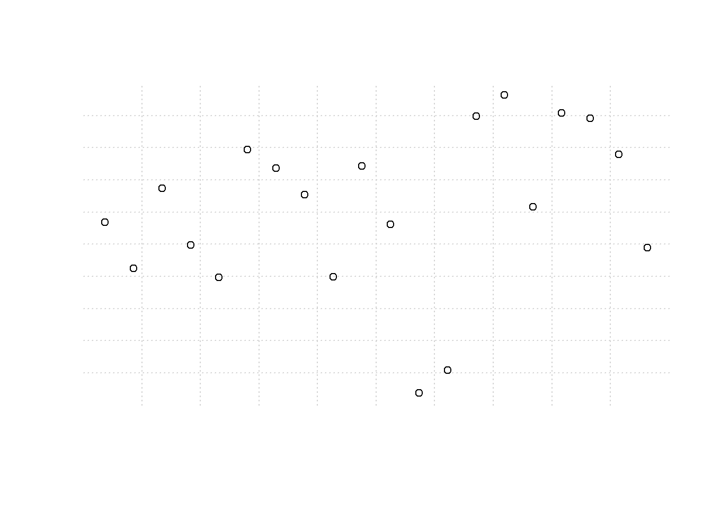
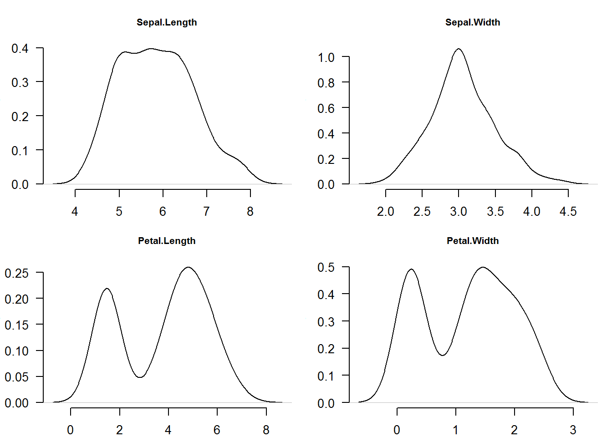
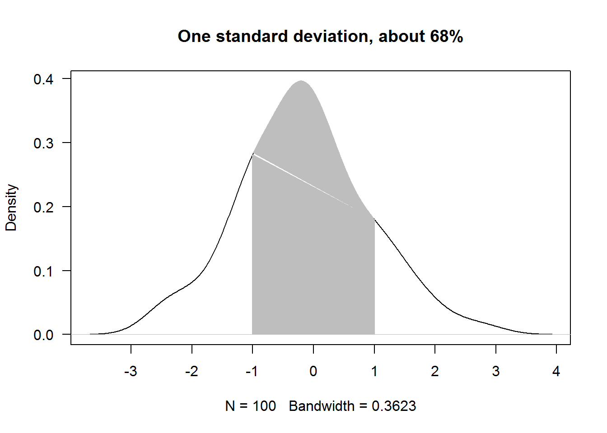
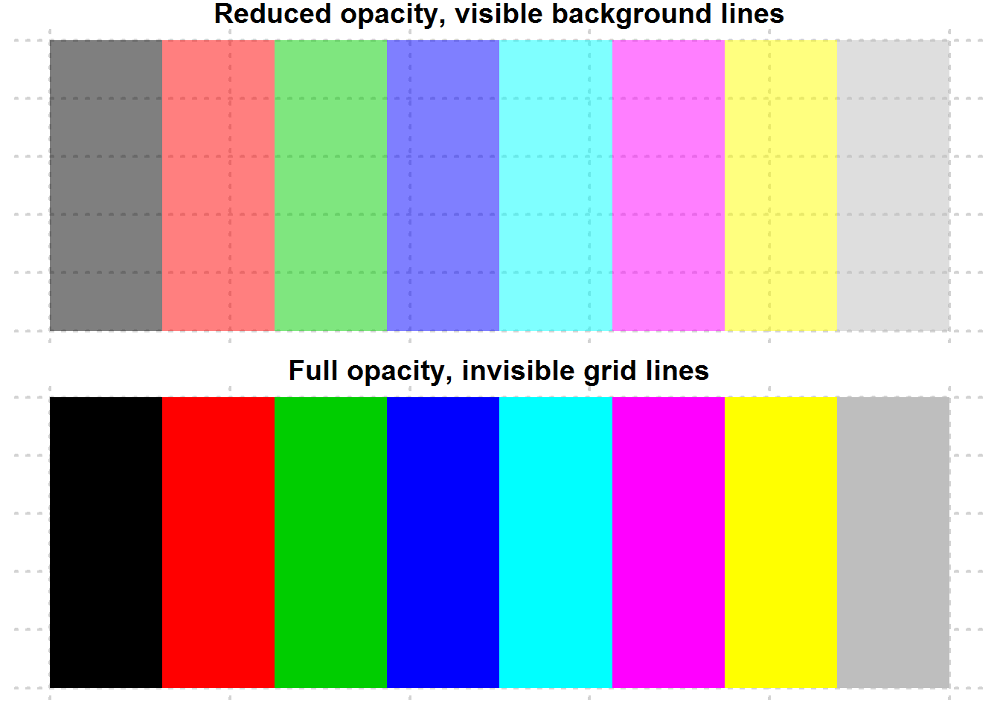

Chapter 8 Plotting in Base R
Goal
The main goal of this chapter is to introduce you to R’s plotting capabilities.
What we shall cover
By the end of this chapter you should:
- Understand the basics of plotting in R
- Be capable of calling and changing graphical parameters
- Be skilled in annotating plots
- Have capacity to produce different base R plots
- Know how to use and create colors in base R
- Be acquainted with R’s graphical devices
Prerequisite
To appreciate this chapter, you must be conversant with:
- Making function calls
- Subsetting data objects
Some understanding of these would be good though definitions are given within text and additional discussions will be given in later chapters.
- Object Oriented Programming in R, particularly concept of classes and generic functions
- Looping in R (especially “sapply”, “lapply” and “by()”), we will discuss this in part tw.
8.1 Introduction
Communicating outputs is the epitome of data analysis and one way to do it is through plots. Base R provides numerous plotting functions which produce some of the well known data display. To understand these functions and in deed many other plotting functions that come with contributed packages, you only need to learn one function, that is “plot()”.
In this regard, we shall begin this chapter by appreciating base R’s “plot” function as a guide to other plotting functions. It is anticipated that this understanding will enable you to not only make good plots but also comprehend and rectify errors as need be.
Preliminaries
Installing and loading required packages
# Require package reshape2 for a data set called tips
if (!"reshape2" %in% installed.packages()[,1]) {
install.packages("reshape2", lib = .libPaths()[1])
}
library(reshape2)
# Require package ggplot2 for data set called economics
if (!"ggplot2" %in% installed.packages()) {
installed.packages("ggplot2", lib.loc = .libPaths()[1])
}
library(ggplot2)8.2 Understanding base R plotting function
The main plotting function in base R is “plot()”, a S3 generic function. Generic functions are used to dispatch other functions called (methods). To understand generic functions, see them as tool boxes containing related tools. The work of these tool boxes (generic functions) is to give you an appropriate tool given a request. In this analogy, tools are methods defined to work on certain classed objects. Request can be viewed as first argument to a generic function. For tool box (a generic function) to give you a tool (method) your request (object) must first be classed or have a class attribute (we learnt this in chapter four), second, it’s class should be among those listed by methods. Listed by methods in the sense that there is a method for the given classed object. Let’s look as methods in plot() to grasp this.
All available methods in any given S3 generic can be shown with function “.S3method”.
plotMethods <- .S3methods("plot")
plotMethods
## [1] plot.acf* plot.data.frame* plot.decomposed.ts*
## [4] plot.default plot.dendrogram* plot.density*
## [7] plot.ecdf plot.factor* plot.formula*
## [10] plot.function plot.ggplot* plot.gtable*
## [13] plot.hclust* plot.histogram* plot.HoltWinters*
## [16] plot.isoreg* plot.lm* plot.medpolish*
## [19] plot.mlm* plot.ppr* plot.prcomp*
## [22] plot.princomp* plot.profile.nls* plot.raster*
## [25] plot.spec* plot.stepfun plot.stl*
## [28] plot.table* plot.ts plot.tskernel*
## [31] plot.TukeyHSD*
## see '?methods' for accessing help and source codeFrom output above, it is clear to see that plot has 31 methods, meaning plot can be called with 31 different objects.
S3 methods are in the form “genericname.class”, for example, for “plot.factor”, “plot” is the generic name while “factor” is class of objects expected when called. Usually we do not call methods directly as this is done by generic functions once they have identified an appropriate method. So in this case we would call plot() rather than plot.factor() or any other method it contains. It however does not mean a method can not be called directly, it can and it should work if correct class is selected, however, if future changes are made to methods in a generic, they will not be reflected in your code as you did not call generic.
With this soft landing on object oriented programming in R, let’s look at some of plot()’s output to understand its dispatching mechanism.
8.2.1 Some outputs of plot()
When x is a data frame (and y = NULL), a bivariate plot for all combination of variables is produced. These paired plots will differ depending on class of the variable taken as “x”. For example, for a data frame with three variables 9 scatter plots will be generated.
# All possible combinations of a data frame with three variables
variables <- c("X", "Y", "Z")
nrow(expand.grid(variables, variables))
## [1] 9We will used base R’s data sets to see plots produced y different inputs to “plot()”
# Data
#----------
set.seed(5839)
a <- factor(sample(letters, 10))
set.seed(84758)
b <- rnorm(10, 60, 10)
class(a)
## [1] "factor"
class(b)
## [1] "numeric"
# Passing individual vector (they must be of the same length)
#------------------------------------------------------------
# When x is a factor vector
plot(x = a, y = b, main = 'When "x" is a factor object')
# When x is a numeric vector
plot(x = b, y = a, main = 'When x is a "numeric" object')
# Passing a data frame object
#----------------------------
# Data frame with two numerical variables
sapply(BOD, class)
## Time demand
## "numeric" "numeric"
plot(BOD, main = "Data frame with two numeric vectors")
# Data frame with 12 numerical variables
sapply(USJudgeRatings, class)
## CONT INTG DMNR DILG CFMG DECI PREP
## "numeric" "numeric" "numeric" "numeric" "numeric" "numeric" "numeric"
## FAMI ORAL WRIT PHYS RTEN
## "numeric" "numeric" "numeric" "numeric" "numeric"
plot(USJudgeRatings, main = "Data frame with 12 numeric vectors")
# Data frame with 5 mixed factor and numerical variables
sapply(CO2, class)
## $Plant
## [1] "ordered" "factor"
##
## $Type
## [1] "factor"
##
## $Treatment
## [1] "factor"
##
## $conc
## [1] "numeric"
##
## $uptake
## [1] "numeric"
plot(CO2, main = "Data frame with 3 factor and 2 numeric vectors")Clearly, it might be wise to avoid calling plot with a data frames multiple variables as they might not be fitted in the plotting window.
For time series objects, plot() will call “plot.ts()” which is basically a line plot, that is plot(type = “l”). For decomposed time series (we shall discuss this in book three: Introduction to Data Analysis usinf R), plot will call plot.decomposed.ts() which will output a plot of each decomposed component.
class(AirPassengers)
## [1] "ts"
plot(AirPassengers)
# Decomposing a time series
decomposed <- decompose(AirPassengers)
plot(decomposed)Factor vectors passed to plot() will produce bar plots.
class(state.division)
## [1] "factor"
plot(state.division, main = "x as a single factor vector") Objects with class table produce mosaic plots
class(HairEyeColor)
## [1] "table"
plot(HairEyeColor, main = "x as an object of class table")Calling plot() with an object whose class is not among the listed 33 methods will result in plot() dispatching “plot.default”. plot.default() will attempt to produce a scatter (bivariate/two variable) plot of x and y. If only x is provided, R will plot it against a sequence of integers the same length as x.
# Creating a numerical object with random numbers
set.seed(5739)
x <- rnorm(20, 100, 5)
x
## [1] 99.0593799 97.1132127 100.4853745 98.0842471 96.7187704
## [6] 102.1275806 101.3459762 100.2236563 96.7410344 101.4361206
## [11] 98.9758597 91.8440020 92.8211197 103.5275907 104.4196583
## [16] 99.6948756 103.6735197 103.4417283 101.9138219 97.9801409
# Checking for a method for objects classed numeric
class(x); grep(pattern = class(x), x = methods("plot"))
## [1] "numeric"
## integer(0)
# Calling plot()
plot(x)For non-numerical objects for which plot() has no method, plot.default() will attempt to convert them to finite objects when computing axis limits, if coercion is not feasible, then an error will be issued with additional warning messages.
plot(letters)
# Error in plot.window(..) : need finite 'xlim' values
# In addition: Warning messages:
# 1: In xy.coord(x, y, xlabel, ylabel, log) : NAs introduced by coercion
# 2: In min(x): no non-missing arguments to min; returning Inf
# 3: In max(x): no non-missing arguments to max; returning -InfFrom preceding discussion, it should now be clear that class of plot()’s first argument (x), will determine the plotting method to be selected. This (dispatched) method will then output a plot based on all arguments passed to plot. Hence, a method can output different plots based on the same data (objects passed to x and y) given different values for other arguments. To understand these differences as well as potential error points, it is important to understand how plot() works.
This will require us to go to plots internals.
8.2.2 plot() Internals
To know how a function works means inspecting its definition. A function’s definition is its body 6 which can be seen by calling the function without parenthesis.
# "plots" function definition
plotPlot’s function definition is not written in R, but the code is similar to R so here’s an R version.
plotDefault <- function(x, y = NULL, type = "p", xlim = NULL, ylim = NULL, log = "", main = NULL, sub = NULL, xlab = NULL, ylab = NULL, ann = par("ann"), axes = TRUE, frame.plot = axes, panel.first = NULL, panel.last = NULL, asp = NA, ...){
localAxis <- function(..., col, bg, pch, cex, lty, lwd) Axis(...)
localBox <- function(..., col, bg, pch, cex, lty, lwd) box(...)
localWindow <- function(..., col, bg, pch, cex, lty, lwd) plot.window(...)
localTitle <- function(..., col, bg, pch, cex, lty, lwd) title(...)
xlabel <- if (!missing(x)) deparse(substitute(x))
ylabel <- if (!missing(y)) deparse(substitute(y))
xy <- xy.coords(x, y, xlabel, ylabel, log)
xlab <- if (is.null(xlab)) {
xy$xlab
} else xlab
ylab <- if (is.null(ylab)) {
xy$ylab
} else ylab
xlim <- if (is.null(xlim)) {
range(xy$x[is.finite(xy$x)])
} else xlim
ylim <- if (is.null(ylim)) {
range(xy$y[is.finite(xy$y)])
} else ylim
dev.hold()
on.exit(dev.flush())
plot.new()
localWindow(xlim, ylim, log, asp, ...)
panel.first
plot.xy(xy, type, ...)
panel.last
if (axes) {
localAxis(if (is.null(y)) xy$x else x, side = 1, ...)
localAxis(if (is.null(y)) x else y, side = 2, ...)
}
if (frame.plot)
localBox(...)
if (ann)
localTitle(main = main, sub = sub, xlab = xlab, ylab = ylab, ...)
invisible()
}From this definition, there are roughly eight steps taken to output a basic plot. These are:
- Open new plotting window
- Set x and y coordinates
- Evaluate and execute any pre-plot expressions
- Make the actual plot
- Evaluate and execute post-plot and pre-axis expressions
- Add axis if required
- Frame plot if needed
- Annotate, and finally display plot
Let’s go through these step by step and link them to plot’s arguments with a purpose of understanding expected values and their implication on output generated.
8.2.3 Step one: Opening new window
When plot is called, the first thing it does is call a low level function “plot.new()”. This function is responsible for opening a plotting window on the active device. There are no arguments to this function though its background color can be changed from default to another color using graphical paramenters which we will learn in the next section.
# Opening graphing window
plot.new()We can take this to be like a frame for our canvas.
8.2.4 Step two: Setting plotting coordinates
With plotting window opened, plot() will specify actual plotting area on a Cartesian plane by calling “plot.window()”. By default, range (minimum and maximum values) of x and y are used otherwise these can be values passed to “xlim” and “ylim”. We can consider this our canvas.
Note, if only one value is passed to plot(), it will be taken as “x” and “y” will be created as a sequence of values from 1 up to length of “x” (index of x). Plot will then map “x” values on the y axis and “y” values (indices) on the x axis. In this case, “x limit” (xlim) will be minimum and maximum values of y and not x, while “y limit” (ylim) will be minimum and maximum values of “x”. Otherwise, if both x and y values are given they will be mapped as usual.
# Open a new graphical window
plot.new()
# Default
range(x); round(range(x))
## [1] 91.844002 104.419658
## [1] 92 104
xlim <- range(1:length(x))
ylim <- range(x)
plot.window(xlim = xlim, ylim = ylim)Don’t expect any output or visible action from “plot.window” as it invisibly creates the coordinate system.
But just to see what it does, we will display an empty plot and extend its limits.
# Plotting Area
plot(x, type = "n", main = "Default Cartesian Plane")
# Plotting area with user defined limits (a bit of padding)
xlm <- extendrange(x, f = 0.2); round(xlm)
## [1] 89 107
ylm <- extendrange(1:length(x), f = 0.2); round(ylm)
## [1] -3 24
plot(x, type = "n", xlim = c(0, ylm[2]), ylim = xlm, main = "Extended Plotting Limits")When incorrect limits are given to either “xlim” or “ylim”, an error will be issued indicating “plot.window()” is not able to construct the plane. For example, it is expected that x and y limits will be vectors of length two having minimum and maximum (range) values of x and y, if this is not so, execution stops with an error message.
plot(x, xlim = 13, ylim = 4)
## Error in plot.window(...) : invalid 'xlim' valueHope you notice a new plotting window was opened with “plot.new()” before issuing the error.
8.2.5 Step three: Evaluate and execute pre-post functions
If there are certain actions to be done before a plot is generated they will be evaluated and executed. This is especially useful when actions to be done have an effect on data points or lines. For example, when adding grid lines or line of best fit, you would want to include this before data points to avoid plotting on top of the point.
Pre-plotting functions are passed to argument “panel.first” in plot.default. But to demonstrate how it is implemented, we are building our plot from our canvas.
plot.new()
plot.window(xlim = xlim, ylim = ylim)
grid(10)Since “plot.window” merely created our plotting area, what we have is a canvas with grid lines.
8.2.6 Step four: Plotting
Before plotting, plot() calls “xy.coords” to generate x and y coordinates. xy.coord() is a low level standardizing function called by most of R’s high level plotting functions. Its core role is to ensure consistency in how x and y coordinates are generated. Output of this function is a list consisting of four elements; x and y coordinates plus x and y label (if given).
This is the function that generates sequence of numbers (1:length(x)) in the event y is not given.
coords <- xy.coords(x)
coords
## $x
## [1] 1 2 3 4 5 6 7 8 9 10 11 12 13 14 15 16 17 18 19 20
##
## $y
## [1] 99.0593799 97.1132127 100.4853745 98.0842471 96.7187704
## [6] 102.1275806 101.3459762 100.2236563 96.7410344 101.4361206
## [11] 98.9758597 91.8440020 92.8211197 103.5275907 104.4196583
## [16] 99.6948756 103.6735197 103.4417283 101.9138219 97.9801409
##
## $xlab
## [1] "Index"
##
## $ylab
## NULLWith coordinates determined, plot() calls a another low level internal plotting function to do the actual plot, that is “plot.xy()” written internally in C language.
plot() calls plot.xy() function with output of xy.coords() and expected plot type, by default this is “p” for points. It also passes along the other values given during the call.
With grid lines set we can add points on top.
plot.new()
plot.window(xlim = xlim, ylim = ylim)
grid(10)
plot.xy(coords, type = "p")
We have made significant progress, but as you can see, this plot does not have any axis, just grid lines and points. Axes are drawn after implementing any pre-axis expressions.
8.2.7 Step five: Evaluation of post-plot and pre-axis expressions
Just like pre-plotting functions, “plot()” will look for functions passed to “panel.last” argument and evaluate them before constructing an axis.
Here let’s add a spline which is an interpolation line (we discuss this a bit later in this chapter, but an in-depth discussion will be during our chapter on data analysis).
plot.new()
plot.window(xlim = xlim, ylim = ylim)
grid(10)
plot.xy(coords, type = "p")
lines(spline(x), col = 2)Notice grid lines are below data points while spline is on top of the data points. Also notice some tips (minimum and maximum) of the spline are clipped as they extend outside the canvas (plotting area); later we shall see some of the ways to rectify it.
8.2.8 Step six: Construct Axis
After implementing post-plotting or pre-axis functions, plot will add axis at the bottom and left side of the plot. Tick marks are computed with a lower level function “axisTicks”, this function is called by “axis” function responsible for adding axis to plots. To generate labels for numerical axis, function “Axis” is called to generate appropriate labels before calling axis to draw them.
It might be useful to note the two similar function, “Axis” and “axis”. “Axis” is a generic function used mostly to develop axis labels for numerical data while “axis” is the main function used to draw axis on a plot. Hence in this case, plot() calls “Axis” as it will generate appropriate labels.
plot.new()
plot.window(xlim = xlim, ylim = ylim)
grid(10)
plot.xy(coords, type = "p")
lines(spline(x), col = 4)
# Adding horizontal (x) axis
Axis(x, side = 1)
# Adding vertical (y) axis
Axis(x, side = 2)
8.2.9 Step Seven: Ploting frame
Once axis are drawn, a frame is added to the plot by default although this can be suppressed by setting “frame.plot” argument to FALSE.
plot.new()
plot.window(xlim = xlim, ylim = ylim)
grid(10)
plot.xy(coords, type = "p")
lines(spline(x), col = 2)
axis(1)
axis(2)
# Adding a frame
box()8.2.10 Step Eight: Annotation
Finally the plot is annotated with axis labels. Default labels are extracted from the call to plot() (what is passed to “x” and “y”).
plot.new()
plot.window(xlim = range(1:length(x)), ylim = range(x))
grid(10)
plot.xy(coords, type = "p")
lines(spline(x), col = 4)
axis(1)
axis(2)
box()
# Annotating with axis labels
title(xlab = "Index", ylab = "x")
8.2.11 Summary: Final output
With that, you receive a basic plot. In summary these are the steps taken to produce this plot.
# Step 1: Open new plotting window
plot.new()
# Step 2: Set up coordinate window (canvas)
plot.window(xlim = range(1:length(x)), ylim = range(x))
# Step 3: Evaluate and execute pre-plotting function
grid(10)
# Step 4: Call actual plotting function
plot.xy(xy.coords(x), type = "p")
# Step 5: Evaluate and implement post-plot and pre-axis functions
lines(spline(x), col = 4)
# Step 6: Add axis
axis(1)
axis(2)
# Step 7: Add a frame to plot
box()
# Step 8: Annotate with axis labels
title(xlab = "Index", ylab = "x")You can generate an exact copy of this plot with plot(x, panel.first = grid(10), panel.last = lines(spline(x), col = 4))
8.2.12 A commented basic plot definition
Having gone through the eight steps, reading through plot()’s definition with added comments will now be much more informative.
source("~/R/Scripts/commentedPlotDefault.R")Next we discuss how to improve output of a plot by changing graphical parameters.
8.3 Graphical Parameters and Annotating Base R Plots
Output of base R’s default plot is as basic as it gets, however, R provides several graphical parameters and annotating functions for improving it. In this section we will go through some of base R’s graphical and annotation function as we try to make communicative plot.
8.3.1 Querying, saving and resetting graphical parameters
In total, there are 72 graphical parameters which control a plot’s output.
# Number of graphical parameters
length(par())
## [1] 72
# All graphical parameters
names(par())
## [1] "xlog" "ylog" "adj" "ann" "ask"
## [6] "bg" "bty" "cex" "cex.axis" "cex.lab"
## [11] "cex.main" "cex.sub" "cin" "col" "col.axis"
## [16] "col.lab" "col.main" "col.sub" "cra" "crt"
## [21] "csi" "cxy" "din" "err" "family"
## [26] "fg" "fig" "fin" "font" "font.axis"
## [31] "font.lab" "font.main" "font.sub" "lab" "las"
## [36] "lend" "lheight" "ljoin" "lmitre" "lty"
## [41] "lwd" "mai" "mar" "mex" "mfcol"
## [46] "mfg" "mfrow" "mgp" "mkh" "new"
## [51] "oma" "omd" "omi" "page" "pch"
## [56] "pin" "plt" "ps" "pty" "smo"
## [61] "srt" "tck" "tcl" "usr" "xaxp"
## [66] "xaxs" "xaxt" "xpd" "yaxp" "yaxs"
## [71] "yaxt" "ylbias"All of these parameters have defaults values which can be queried with “par” function. Object returned will depend on number of graphical parameters queried.
# Quering default value(s)
#-----------------------
# Quering one graphical parameter returns a vector
par("mar")
## [1] 5.1 4.1 4.1 2.1
class(par("mar"))
## [1] "numeric"
# Quering multiple graphical parameters returns a list
par("mfrow", "mar", "oma", "cex", "font")
## $mfrow
## [1] 1 1
##
## $mar
## [1] 5.1 4.1 4.1 2.1
##
## $oma
## [1] 0 0 0 0
##
## $cex
## [1] 1
##
## $font
## [1] 1
class(par("mfrow", "mar", "oma", "cex", "font"))
## [1] "list"Default values can be saved and reset. Resetting to original parameters will be based on type of object save as having original values. If one value was save, then entire object can be used, otherwise if multiple parameters were were saved, then they would be in list form and usual list subsetting will be implemented.
# Saving default values and resetting original parameter(s)
#----------------------------------------------------------
# Saving one parameter
op <- par("mar")
# Resetting using saved vector
par(mar = op)
# Saving multiple parameters
op <- par("mfrow", "mar", "oma", "cex", "font")
# Resetting using saved list
par(mfrow = op$mfrow, mar = op$mar, oma = op$oma, cex = op$cex, font = op$font)8.3.2 Setting/Changing graphical parameters
Out of the 72 parameters, 66 can be changed while 6 are read only (RO). Read only graphical parameters are, “cin”, “cra”, “csi”, “cxy”, “din”, and “page”.
For the 66 parameters, there exists two ways for setting different graphical parameters, one has a global effect as it affects all subsequent plots during an R session and the other has a temporal effect. Global changes are made with “par” function while temporal changes are made by passing graphical parameters as arguments to plotting functions. Many of the ‘r length(par(no.readonly = TRUE))’ non-read-only parameters can be passed as plotting argument with exception of 22 parameters detailed on “par” help page (?par).
When setting parameters using “par” function, it’s important to save original parameters and reset once plotting is complete.
As an example, let’s see how to make global and temporal changes for one and multiple graphical parameters.
# 1. Changing global parameters
#-------------------------------
# Save original parameter value
op <- par("cex.main")
# Set new parameter value
par(cex.main = 0.7)
# Generate a plot
plot(x, main = "Making Header smaller: a single global change")# Reset original parameter
par(cex.main = op)
# Save multiple values of original parameter
op <- par("bg", "font.lab", "fg", "las", "cex.main")
# Set several parameters
par(bg = "snow", font.lab = 4, fg = "deeppink", las = 1, cex.main = 0.7)
# Generate plot
plot(x, main = 'Multiple changes made by calling par()')# Reset original parameters
par(bg = op$bg, font.lab = op$font.lab, fg = op$fg, las = op$las, cex.main = op$cex.main)
# 2. Adding graphical parameters as arguments to plot, has a temporal effect
#---------------------------------------------------------------------------
plot(x, main = "Multiple changes made by adding par arguments", font.lab = 2, fg = "deeppink", las = 1, cex.main = 0.7)8.3.3 Implementing some graphical parameters and annotation
With knowledge on how to query, save, set and reset graphical parameters, let’s now explore a few more parameters to see how to drastically change a plot’s output.
In this small venture, we will see how to make multi-panel plots, use color, annotate with titles, reconstruct axis, use different plotting characters and add lines as informative displays (statistical lines) or for aesthetic.
8.3.3.1 Multi-paneling
Multiple plots can be displayed on the same window. R provides two graphical parameters to create multi-panel layout, these are “mfrow” and “mfcol”. “mfrow” creates multiple plots by row order while mfcol created layout by column order. Both of these parameters can only be set by calling “par” function.
# As good practice, querying and saving default values
op <- par("mfrow"); op
## [1] 1 1
# Implementing a row order layout
par(mfrow = c(1, 2))
# Making two plotting
plot(x, main = "Plot one")
plot(BOD, main = "Plot two")
# Resetting original parameter
par(mfrow = op)
# Confirm restoration
par("mfrow")
## [1] 1 18.3.3.2 Annotating plots with titles and labels
There are three ways of annotating plots with titles and labels. The first involves calling a plotting function with titles and labels as arguments, the second is by calling “title” function and third is using “mtext” which adds these annotations as margin text.
8.3.3.2.1 Titles and labels as as arguments to plotting functions
The easiest way to add titles and labels to a plot is adding them as arguments when calling plot. These annotations can also be formatted by adding specific graphical parameters like color, size, type, and alignment.
As an example we are going to add a bold and slant main title, a grey, slant and smaller sub title, and a slant y label.
# Annotating with titles and labels and formatting them
plot(BOD, main = "Biochemical Oxygen Demand", sub = "Originally from Marske (1967)", ylab = "Demand", font.main = 4, cex.sub = 0.7, col.sub = "grey", font.sub = 3, font.lab = 3)Notice here we do not need to reset par() values as par() was not called directly.
8.3.3.2.2 Annotating with “title()”
Adding titles during call to plot has some restrictions especially where they are placed. For example, by default main title is place 3 lines from plotting region, this is somewhat far from plot especially more spaces is needed as the margins. Adding a line argument to a plotting function is not advisable as it corresponds to multiple other low level functions thereby can be effected by more functions than need be.
For this reason and others it might be good to call “title” function. This function gives more control on presenting and positioning.
Here we demonstrate layout or positioning of labels using function title and line argument.
# Making comparison (paneling)
par(mfrow = c(1, 2))
# Default plot
plot(BOD, main = "Default placement", cex.main = 0.9)
# Plotting with no annotation
plot(BOD, ann = FALSE)
# Moving x label further from x axis
title(xlab = "Time (days)", line = 4)
# Bring main title and y label closer to frame/axis
title(main = "Displaced annotation", line = 1, cex.main = 0.9)
title(ylab = "Demand (mg/l)", line = 2)
# Resetting original parameters
par(mfrow = op)8.3.3.2.3 Axis and graphical parameters
Graphical parameters can be used to construct different axis and axis labels. For example drawing an axis with slant labels. This is necessary when axis labels are long.
We will create new axis that handles long labels. To do this, we will first suppress x axis and its label using parameters “xaxt” and “xlab”, then add x axis without labels. Subsequently we will use function “title” to add labels and passing graphical parameters, “srt” (for string rotation), “xpd” (to allow plotting outside the figure region), and “usr” (used to get Cartesian origin of y).
# Labels for x axis
days <- paste("Day", c("One", "Two", "Three", "Four", "Five", "Six", "Seven"))
# Plotting but suppressing x axis and label
plot(BOD, xaxt = "n", las = 1, xlab = "", main = "Slant label (x axis)", ylab = "y label")
# Adding x axis without label
axis(side = 1, labels = FALSE)
# Adding labels as text to plot
text(1:length(days), par("usr")[3] - 0.9, srt = 45, adj = 1, labels = days, xpd = TRUE)
# Adding a bold x label some lines after axis label
mtext("Time", side = 1, line = 4, font = 2)8.4 Plotting characters (pch)
Plotting characters are symbols used to display data on a plot. These characters can be circles, squares, triangles, or stars. They can also be crossed, hollow, filled, big, or small. You can also use alphabetical letters, Greek and mathematical symbols.
Here are the first 25 symbols implemented by “S” and “R”.
## x y
## [1,] 5 25
## [2,] 10 25
## [3,] 15 25
## [4,] 20 25
## [5,] 25 25
## [6,] 5 20
## [7,] 10 20
## [8,] 15 20
## [9,] 20 20
## [10,] 25 20
## [11,] 5 15
## [12,] 10 15
## [13,] 15 15
## [14,] 20 15
## [15,] 25 15
## [16,] 5 10
## [17,] 10 10
## [18,] 15 10
## [19,] 20 10
## [20,] 25 10
## [21,] 5 5
## [22,] 10 5
## [23,] 15 5
## [24,] 20 5
## [25,] 25 5There are many more plotting characters, just have a look at R’s documentation on “points”.
8.5 Plot types
There are two basic types of plots in base R’s plot(), “points” and “lines”, any other is a variations of these two. Actually, R can produce nine types of plots from lines and point, these are “l” for lines, “p” for points, “b” for both points and lines, “c” for empty points joined by lines, “o” for over plotted points and lines, “s” and “S” for stair steps and “h” for histogram-like vertical lines. There is also type “n” used to suppress plotting.
Let’s generate these plots, but this time being more efficient programmers. Instead of making nine calls to plot we will make two calls using a programming concept called “looping”. Essentially looping means “jump”, as in jump through some objects and perform a task. For example, in our case we have nine plots to generate, hence we want to “loop” over a counter from 1 through 9 and for each count, we want to make a plot, that is “plot 1”, “plot 2”, until “plot 9”. For each of these plots, we want to add an informative title i.e. type of plot.
When writing loops, you need to first determine aspects of the task that vary and those that are constant. In our case, tasks that vary (from one plot to the next) include, data sets as we will use two of them (BOD and tips[,1:2]), plot types and headings which will both have nine different sets. Tasks that will remain constant in all plots are x and y labels which we will suppress (to facilitate multi-plotting) and change y label’s orientation for legibility (par(“las”)). The idea behind looping is that varying tasks will be implemented with a subscript denoting index of task being carried out. Therefore these varying tasks will need to be indexed by creating vectors before calling a looping function.
As we will learn in book two: “R - Beyond Essentials”, R has a number of looping functions each suitable for certain objects and/or tasks, here we will use “sapply”. Sapply takes an object to be looped as it’s first argument, and a function to be performed on each element of first argument as its second argument.
Basically, the first argument would consist of an object with two or more elements, like a list, a vector or a data frame (there other more suitable looping functions for matrices and array). In our case our first argument will be a vector with values 1 through 9 which will our counter (counting plots 1 to plot 9). Our second argument will be an anonymous function with one argument which an iterator. An iterator here is an index of plots to be generated and will be used to subset the varying arguments. Output of sapply is either a simplified vector or a list, in our case it produces an empty lists along side the plots, to generate plots without empty lists, we will suppress the list with function “invisible”.
# Querying, saving and changing original parameters
op <- par("mfrow", "mar")
par(mfrow = c(3,2), mar = c(2, 2, 4, 0.5))
# Extracting need vector from tips data
tips <- tips[, 1:2]
# Creating vectors of varing variables (elements to be subset)
dat <- c(rep("BOD", 7), rep("tips", 2))
type <- c("p", "l", "b", "c", "s", "S", "n", "o", "h")
main <- paste("Type:", type)
# Looping through a plot counter to construct nine different plots while suppressing returned empty list
invisible(sapply(seq_along(type), function(x) plot(get(dat[x]), type = type[x], main = main[x], xlab = "", ylab = "", las = 1)))
# Resetting original parameters
par(mfrow = op$mfrow, mar = op$mar)
# Try and produce these plots one at a time and see number of repetitive code used.Looping is an interesting topic for which we get to learn from it’s foundation in our second book: “R - Beyond Essentials”.
8.5.1 Annotating plots with lines
Lines can be added to an existing plot either for statistical value or just plotting aesthetics.
For example, lets annotate three different plots of the same data. For the first plot we will add a spline (interpolated line), for the second we will add grid lines and for the last plot we will show average with vertical and horizontal lines.
op <- par("mfrow", "mar")
par(mfrow = c(2, 2), mar = c(rep.int(3, 3), 0.5))
# Add a spline (Interpolated line)
plot(BOD, pch = 20, ylim = c(6, 20), las = 1)
title(main = "Fitting a spline", xlab = "Time", ylab = "Demand", line = 1.9)
lines(spline(BOD), col = 4)
# Add grid lines (Aesthetics)
plot(BOD, pch = 20, las = 1)
title(main = "Adding grid lines", xlab = "Time", ylab = "Demand", line = 1.9)
abline(h = seq(8, 20, by = 2), v = 1:7, col = "grey")
# Show average
plot(tips[,1:2], las = 1)
title(main = "Showing average", xlab = "Total bill", ylab = "Tips", line = 1.9)
abline(h = mean(tips$tip), v = mean(tips$total_bill), lty = 2, col = 8, lwd = 2)
par(mfrow = op$mfrow, mar = op$mar)8.6 Generating and Annotating Mathematical Plots
Mathematical (and indeed other scientific) plots can be generated in R annotated with models and/or functions used to generate them. These functions or models are added to plots as “expressions” using a text annotating function.
Expressions are syntactically correct but unevaluated functions or commands. Syntactically correct means code is in R language and capable of being evaluated if run. Expressions are used to prevent evaluation like in this case we will use them to annotate plots but also they are not evaluated.
In R, expressions are created with “expression” function.
# General code to be evaluated
1 + 1
## [1] 2
class(1 + 1)
## [1] "numeric"
# Passing code to "expression()" stops evaluation
expression(1 + 1)
## expression(1 + 1)
class(expression(1 + 1))
## [1] "expression"
# Evaluating an expression
eval(expression(1 + 1))
## [1] 2Now let’s look at some examples of how expressions can be used to explain a plot.
For our first example we will construct a plot with a regression model Cx = 156 + 19.7x modeling relationship between costs and sales of cameras; our a domain will be 1 <= x <= 15.
But before plotting, one key consideration we need to make are coordinates of the texts/expression. Specifically alignment (par(“adj”)), orientation (par(“srt”)), and position (par(“pos”)).
To add the model as expressions with characters, we will need to decompose it to three components; “Cx”, “=” and “156 + 19.7x” with the expectation that they will be plotted above the regression line. We shall then plot the domain at the bottom right of the plot.
In order to estimate x and y coordinates, we will call “strWidth” function to compute distances between each component.
# Constructing a plot
#---------------------
# Data for plotting
x1 <- c(1, 5, 8, 12)
Cx1 <- c(175, 260, 305, 395)
# A simple scatter plot (points added after grids)
plot(x1, Cx1, type = "n", main = "Costs of Manufacturing and Selling Cameras", xlab = "Cameras Sold (millions)", ylab = c("Cost (millions)"), xlim = c(1, 15), ylim = c(175, 452), las = 1, frame.plot = FALSE)
title(sub = "From Applied Calculus (2000) pg 16 by Barnett, R.A. et.al", cex.sub = 0.7, col.sub = "grey", font.sub = 3)
# Adding some aesthetics (background color for plot region)
rect(par("usr")[1], par("usr")[3], par("usr")[2], par("usr")[4], col = grey.colors(1, start = 0.85))
# Adding a regression line (pre-analysed function)
x2 <- 1:15
Cx2 <- 156 + 19.7 * x2
lines(x2, Cx2, col = 4)
# More aesthetics (grid lines)
abline(h = axTicks(2), v = 1:15, col = "white")
# Adding points last to avoid being plotted over by grid lines
points(x1, Cx1, pch = 20, col = 2)
# Annotating with expressions
#-----------------------------
# Components of regression model
expr <- expression(C[x])
str <- "="
expr1 <- expression(156 + 19.7*x)
# Computing coordinates for each component of the expression
# Width of spaces in between text
empStr <- strwidth(" ")
# First component (Cx) will be centered around x = 10 (half of the text will be before and the other after 10)
width1 <- 10
# Second component ("=") will start about 0.9 after end of first component
width2 <- width1 + strwidth("Cx")/2 + strwidth("=")/2
# Third component (156 + 19.7x) will be about 1 (cex) from end of the second component
width3 <- width2 + strwidth("=")/2 + strwidth(expr1)/2
# Vector with combined widths
widths <- c(width1, width2, width3)
# Adding model as a text/expression
slope <- 19.7 + 10.3
text(x = widths, y = c(156 + 19.7 * widths), labels = c(expr, str, expr1), pos = 3, srt = slope)
# Computing coordinates for domain
str1 <- "Domain:"
expr2 <- expression(1 <= x)
expr3 <- expression(x <= 15)
domain <- c(str1, expr2, expr3)
width1 <- 12.5
width2 <- width1 + strwidth(str1)/2 + strwidth(expr2)/2
width3 <- width2 + strwidth(expr2)/2 + strwidth(expr3)/2 - strwidth("x")
# Annotating with domain
text(x = c(width1, width2, width3), y = par("usr")[3], labels = domain, pos = 3)In our second example we look at how to add nonlinear functions to plots and annotate with formulas.
# Data
x <- c(1, 3, 6, 9, 12, 15)
expr <- expression(Px = x * (94.8 - 5 * x) - (156 + 19.7 * x))
Px <- eval(expr)
cbind(x, round(Px))
## x
## [1,] 1 -86
## [2,] 3 24
## [3,] 6 115
## [4,] 9 115
## [5,] 12 25
## [6,] 15 -155
# Plot suppressing points so they are not covered with grid lines, x label so that it is later position at line 1, and x axis which will be plotted at origin (x = 0, y = 0)
plot(x = x, y = Px, type = "n", main = "Profits from Sale of Cameras", xlab = "", ylab = "Million dollars", las = 1, frame.plot = FALSE, xaxt = "n")
# Annotating with subtitle and x label
title(xlab = "Million cameras", line = 1)
title(sub = "From Applied Calculus pg.17 by Barnett, R.A. et.al (2000)", cex.sub = 0.8, font.sub = 3, col.sub = "grey", line = 2.5)
# Adding background color
rect(par("usr")[1], par("usr")[3], par("usr")[2], par("usr")[4], col = grey.colors(1, start = 0.85), border = "grey")
# Adding grid lines (for that mathematical graphing effect)
abline(h = axTicks(2), v = 1:16, col = "white")
# Drawing axis lines
segments(x0 = 0, y0 = 0, x1 = par("usr")[2])
segments(x0 = par("usr")[1], y0 = par("usr")[3], y1 = par("usr")[4], lwd = 2)
# Drawing Tick marks
invisible(sapply(1:15, function(x) segments(x0 = x, y0 = 0, y1 = -10)))
# Adding axis labels
invisible(sapply(seq(5, 15, by = 5), function(i) text(x = i, y = -20, labels = i, cex = 0.8)))
# Fitting a curved (nonlinear) line with "spline"; interpolation line
lines(spline(x, Px), col = 4)
# Adding points last so that they are not masked by lines (grid and regression)
points(x, Px, pch = 20, col = 2)
# Annotating curve with formula used to produce it.
slope <- (Px[6] - Px[5])/ (x[6] - x[5])
text(x = 14, y = -85, labels = expr, pos = 3, srt = slope, cex = 0.8)Finally, lets see how to construct a four quadrant Cartesian coordinate system.
In this example we will plot an exponential (y = 2^x) and a logarithmic (x = 2^y) function as well as a reflection line (y = x). Key consideration here are limits of both x and y axis given two data sets (exponential and logarithmic). Our interest is that both axis stretch as far as the maximum value of each data set.
# Exponent data
eX <- c(-3, -2, -1, 0, 1, 2, 3)
y_2x <- c(1/8, 1/4, 1/2, 1, 2, 4, 8)
# Logarithmic data
logX <- y_2x
y <- eX
cbind(eX, y_2x, logX, y)
## eX y_2x logX y
## [1,] -3 0.125 0.125 -3
## [2,] -2 0.250 0.250 -2
## [3,] -1 0.500 0.500 -1
## [4,] 0 1.000 1.000 0
## [5,] 1 2.000 2.000 1
## [6,] 2 4.000 4.000 2
## [7,] 3 8.000 8.000 3
# Determining limits of each data set
xlim1 <- range(eX)
ylim1 <- range(y_2x)
xlim2 <- range(logX)
ylim2 <- range(y)
xlim1; xlim2
## [1] -3 3
## [1] 0.125 8.000
ylim1; ylim2
## [1] 0.125 8.000
## [1] -3 3
# Constructing x and y limits based of maximum values of each data set
xlimts <- c(xlim1[1], xlim2[2])
ylimts <- c(ylim2[1], ylim1[2])
xlimts
## [1] -3 8
ylimts
## [1] -3 8
# Plotting
#----------
# Increase margins for plotting region
op <- par("mar")
par(mar = c(2, 1, 2, 1))
# Start a plot without points, annotation and axis
plot(x = xlimts, y = ylimts, type = "n", ann = FALSE, axes = FALSE)
title(main = "Exponential and Logarithmic Functions", cex = 1.5, line = 1)
title(sub = "From Applied Calculus by Barnett, R.A. et.al (2000) pg 109", cex.sub = 0.8, font.sub = 3, col.sub = "grey", line = 0.5)
# Add background color
rect(par("usr")[1], par("usr")[3], par("usr")[2], par("usr")[4], col = grey.colors(1, start = 0.85), border = "transparent")
# Add grid lines and lines for x and y axis
abline(h = -3:8, v = -3:8, col = "white")
abline(h = 0, v = 0)
# Adding reflection line
lines(x = c(-3, 8), y = c(-3, 8), lty = 2)
# Fit exponential and logarithmic functions
#-------------------------------------------
lines(spline(eX, y_2x), col = 4)
lines(spline(logX, y), col = 4)
# Add points
points(eX, y_2x, pch = 20, col = 2, cex = 0.9)
points(logX, y, pch = 20, col = 2, cex = 0.9)
# Draw tick marks
invisible(sapply(-3:8, function(x) segments(x0 = x, y0 = 0, y1 = -0.3)))
invisible(sapply(-3:8, function(x) segments(x0 = 0, y0 = x, x1 = -0.1)))
# Axis labels
invisible(sapply(seq(-2, 8, by = 2)[-2], function(x) text(x = x, y = -0.2, labels = x, pos = 1, cex = 0.8)))
invisible(sapply(seq(-2, 8, by = 2)[-2], function(x) text(x = -0.2, y = x, labels = x, pos = 2, cex = 0.8)))
# Annotating with mathematical functions
#----------------------------------------
radian <- 180/pi
slope <- (y_2x[7] - y_2x[6])/(eX[7] - eX[6])
angle <- atan(slope) * radian
text(x = c(2.4, 2.4 + strwidth(2.4)/2), y = c(6, ((2.4 + strwidth(2.4)/2 + empStr) - 2.4) + 6 + empStr), labels = c("y =", expression(y = 2 ^ x)), pos = 4, cex = 0.9, srt = 50)
slope <- (7 - 6)/(7 - 6)
angle <- atan(slope) * radian
text(x = 6, y = 6, labels = "y = x", pos = 3, cex = 0.9, srt = angle)
slope <- (y[7] - y[6])/(logX[7] - logX[6])
angle <- atan(slope) * radian
x1 <- 6.5
x2 <- x1 + strwidth("x =")/2
text(x = c(x1, x2), y = c((x1 * 2.5)/6, tan(angle)*(x2 - x1)), labels = c("x =", expression(2 ^ y)), pos = 3, cex = 0.9, srt = angle)
# Return original parameter
par(mar = op)8.7 Other Base R Plots
8.7.1 Histogram and Density plots
Histograms and density plots are excellent graphs for showing univariate quantitative data distribution. Univariate means one variable and quantitative are numerical values, both discrete (integers) and continuous (double).
For integer vectors (whole numbers), histogram is appropriate; for type double or continuous, density plots are more appropriate. The underlying reason for using density plots for continuous data is because it is generally difficult to get interval limits used in constructing histogram bins.
8.7.1.1 Histograms
Histogram are similar to bar graphs in terms of appearance but they differ substantially as bar graphs use categorical or count data while histograms use numerical data.
For example generating a histogram of some sample.
# Default histogram
hist(tips$tip, col = blues9[4], border = blues9[6], las = 1, ylab = "Tips")
To understand how histograms are generated, you need to understand argument “breaks”.
8.7.1.1.1 Breaks argument
Breaks argument gives the number of expected bins (binning). Binning means grouping data into some given category/group with aim of showing different feature of a data set. It is therefore quite informative to try different bin sizes (breaks) to see other aspects of the distribution.
The basic idea of binning or grouping data is done by dividing it into the number of breaks given (with some addition to ensure extreme values are included). Division is first done by getting bin limits from a vector with a sequence of values from minimum to maximum.
Let’s take data set “Precip” that comes with R to understand how binning is done.
# Set expected number of breaks
breaks <- 20
# Get range (minimum and maximum values)
precipRange <- range(precip)
# Computing Bin limits (1 is added to breaks to enable grouping)
precipSeq <- seq(precipRange[1], precipRange[2], length.out = breaks + 1)
precipSeq
## [1] 7 10 13 16 19 22 25 28 31 34 37 40 43 46 49 52 55 58 61 64 67Vector “precipSeq” has 21 values (1 more than breaks given) which will form the bin limits. First bin will be from 7 (or minimum value) to 9, second will be from 10 to 13, and last bin will be from 65 to maximum value. Given these bins, values will be allocated to bins they fall into, for example a value 17 would fall in bin 16 to 19.
# Distribution of values given ten breaks
precipBin1 <- table(cut(precip, breaks = 10))
precipBin1
##
## (6.94,13] (13,19] (19,25] (25,31] (31,37] (37,43] (43,49]
## 6 7 3 7 14 16 9
## (49,55] (55,61] (61,67.1]
## 4 3 1
# Distribution of values based on summary statistics
precipSumStats <- summary(precip)
precipBin2 <- table(cut(precip, unname(precipSumStats)))
precipBin2
##
## (7,29.4] (29.4,34.9] (34.9,36.6] (36.6,42.8] (42.8,67]
## 17 10 7 17 18
# Distribution of values given twenty five breaks
precipBin3 <- table(cut(precip, breaks = 25))
precipBin3
##
## (6.94,9.4] (9.4,11.8] (11.8,14.2] (14.2,16.6] (16.6,19] (19,21.4]
## 4 1 2 4 2 1
## (21.4,23.8] (23.8,26.2] (26.2,28.6] (28.6,31] (31,33.4] (33.4,35.8]
## 1 2 0 6 4 3
## (35.8,38.2] (38.2,40.6] (40.6,43] (43,45.4] (45.4,47.8] (47.8,50.2]
## 8 7 8 3 3 5
## (50.2,52.6] (52.6,55] (55,57.4] (57.4,59.8] (59.8,62.2] (62.2,64.6]
## 0 2 1 2 0 0
## (64.6,67.1]
## 1
# Note: barplots of these vectors will be similar to histograms with same breaksThere is no one recommended number of bin size as it depends on data distribution and analysis goal, however, there have been a number of guidelines including “Sturges” which is R’s default binning system.
op <- par("mfrow")
par(mfrow = c(2, 2))
hist(precip, main = "Breaks set to default 'Sturges'")
hist(precip, breaks = 25, main = "Breaks set to 25")
hist(precip, breaks = nclass.scott(precip), main = "Breaks set to 'Scott'")
hist(precip, breaks = nclass.FD(precip), main = "Breaks set to 'Freedman-Diaconis'")par(mfrow = op)8.7.1.1.2 Rugs
Sometimes it is necessary to show data concentration (density) areas, this can be shown with a “rug”. A rug is a one dimensional density plot added to axes.
op <- par("mfrow")
par(mfrow = c(2, 2))
hist(precip, main = "")
rug(precip, col = 4)
hist(precip, breaks = 25, main = "")
rug(precip, col = 4)
mtext("Histograms with rugs showing marginal distribution", line = 2, at = -15, font = 7, cex = 1.2, xpd = NA)
hist(precip, breaks = nclass.scott(precip), main = "")
rug(precip, col = 4)
hist(precip, breaks = nclass.FD(precip), main = "")
rug(precip, col = 4)par(mfrow = op)Just like plot(), we can add some aesthetics to histograms.
color <- "#F6CBB7"
hist(precip, breaks = 25, freq = FALSE, col = color, main = "Annual Precipitation in US Cities", xlab = "Average amount of precipitation (rainfall) in inches", las = 1)
rug(precip, col = 4)8.7.1.1.3 Histogram as an object
Histograms can be save as an objects of class “histogram”. These objects can be used to call plot() which will dispatch “plot.hist” method.
# Create an object with class "histogram"
precipHist <- hist(precip, breaks = 25, freq = FALSE)class(precipHist)
## [1] "histogram"
# Call plot() but suppressing y axis and add a rug
plot(precipHist, ann = FALSE, yaxt = "n", col = color)
title(main = "Annual Precipitation in US Cities", xlab = "Average precipitation (rainfall) in inches")
rug(precip, col = 4)
Histograms (like pie and bar graphs) are not ideal for publication due to data-ink ratio but are excellent for presentations and Exploratory Data Analysis (EDA) 7 or quality check.
8.7.1.2 Density plots
As noted earlier, these plots are ideal for continuous data (typeof = “double”) as they draw continuous line.
As an example, we will use a well known data set called “iris” or the Edgar Anderson’s Iris Data (?iris). Our interest is to produce density plots of the four numerical vectors (Sepal.Length, Sepal.Width, Petal.Length, Petal.Width). We will do this in a multi-plot layout (2 row and 2 columns) and as shown before, instead of making four calls to plot, we will use “sapply” to loop through a counter (1:4).
# Looping through first four columns of iris to confirm their data type
sapply(iris[, 1:4], is.double)
## Sepal.Length Sepal.Width Petal.Length Petal.Width
## TRUE TRUE TRUE TRUE
# Set up plotting region
op <- par(c("mfrow", "mar"))
par(mfrow = c(2, 2), mar = c(2, 3, 3, 1))
# Plot four density graphs using a looping function
invisible(sapply(1:4, function(x) plot(density(iris[, x]), main = names(iris)[x], xlab = "", las = 1, frame.plot = FALSE, cex.main = 0.8)))
# Reset original parameters
par(mfrow = op$mfrow, mar = op$mar)
# Try reproducing this plots by making individual "plot()" callsFor our second example we will demonstrate effects of standard deviation (SD) on data distribution. Standard deviation is average distance of each data point from the mean.
Our task here is to output for density plots (lines) showing 1, 2 and 3 standard deviation away from mean 100.
# Generate four data sets from random distrubutions with different SD
a <- lapply(1:3, function(x) rnorm(1000, 100, x))
# Increase plotting region (reducing outer margin)
par(mar = c(4, 3, 3, 1))
# Plot first distribution that will set up plotting region (giving x and y limits)
plot(density(a[[1]]), ann = FALSE, las = 1)
title(main = "Distributions with different standard deviation (SD)", line = 1.5, cex.main = 1)
# Add other distribution using lines function
lines(density(a[[2]]), col = 4)
lines(density(a[[3]]), col = 2)
# Redo the last part i.e. drawing of lines by using "sapply": Coding principle -> "less-is-efficient". Think about this principle and let's discuss it in our follow-up book. 8.7.1.3 Annotating Plots with Legends
Legends give useful information about plots, more so for multi-plotting. They can be added anywhere on the plotting region (coordinate plane) although consideration should be made to avoid obscuring core plot.
We will add a legend to our density distribution plot indicating what each line represents.
plot(density(a[[1]]), ann = FALSE, type = "n")
title(main = "Distributions with different standard deviations (SD)", line = 1.5, cex.main = 1)
cols <- c(1, 4, 2)
invisible(sapply(1:3, function(x) lines(density(a[[x]]), col = cols[x])))
# Add legend using a key word instead of coordinates
legend("topright", legend = c("One SD", "Two SD", "Three SD"), cex = 0.9, lty = 1, col = cols)
# Reset original parameters
par(mar = op$mar)8.7.1.4 Polygons
Any area of a plot can be shaded or marked with function “polygon”. This function takes coordinates of “vertices” (corners) and draws a suitable polygon. Polygons can be filled with color, shaded with line or with borders only; they are useful in showing area under a curve like in density plots.
In the following example we will shade area under a density plot indicating one standard deviation away from the mean or 68%. We shall not use calculus for now but hopefully we will get a refresher right before our chapters on data analysis in our third book for this tutorial series.
# Seed used for reproducibility
set.seed(384)
# Drawing standard random numbers and computing density
x <- density(rnorm(100))
# Making a density plot
plot(x, xaxt = "n", las = 1, main = "One standard deviation, about 68%")
axis(1, at = -4:4)
# Obtaining values between -1 and posive 1
ind1 <- grep(pattern = "^-1.", as.character(x$x))
ind2 <- grep(pattern = "^1.", x = as.character(x$x))
# Getting value close to required range
x1 <- max(x$x[ind1])
x2 <- min(x$x[ind2])
# Finding corresponding y values
y1 <- x$y[which(x$x == x1)]
y2 <- x$y[which(x$x == x2)]
# Area coordinates
dat1 <- data.frame(x = rep(c(x1, x2), each = 2), y = c(0, y1, y2, 0))
dat2 <- data.frame(x$x, x$y)[182:315,]
# Shading area under a curve (representing 68% or 1sd away from mean)
polygon(dat1, col = 8, border = 8)
polygon(dat2, col = 8, border = 8)
8.7.2 Box (box-and-whisker) plots
Box plots like histograms and density plots are useful for displaying data distribution. These plots are based on the five number summary, that is “minimum”, “Q1”, “Q2 (median)”, “Q3”, and “maximum”. Letter “Q” stands for “quarter”, that is quarter 1, quarter 2 and quarter 3. These summary statistic can be displayed in a box plot as univariate (distribution of one numerical variable) or bi/multivariate (one numerical variable and factor variable(s)) displays.
8.7.2.1 Univariate box plot
Univariate box plots involve one numerical variable. In R, function “boxplot” produces these plots which are also referred to as box-and-whisker plots. Box plot is vectorised meaning it can accept multiple vectors and will output plots the same size as the number of vectors passed.
For instance, we can generate box plots for the first four columns of iris data set with one call and without calling a looping function.
boxplot(x = iris[, 1:4], main = "Boxplot of Iris Data Set", las = 1)As with other plots in base R, box plots can be improved to communicate or accentuate certain areas of the plot.
For example, we can add some background color to the boxes (to display IQR), change plotting character (to show extreme values), show only average on y axis (to make them stand out), make x axis labels to be slant (for legibility), add segments (linking average value and boxes) and finally frame the plot.
# Generating box plots
boxplot(iris[, 1:4], col = 8, pch = 20, axes = FALSE, las = 1, main = "Fishers et.al Iris Data Set")
# Computing averages
average <- sapply(iris[,1:4], median)
# Adding y axis with tickmarks and labels at averages
axis(2, at = average, las = 1)
# Adding x axis but without labels
axis(side = 1, labels = FALSE)
# # Adding labels
text(x = 1:4, y = par("usr")[3] - 0.9, labels = names(iris[,1:4]), srt = 45, xpd = NA, adj = 1)
# Showing averages with segments
segments(x0 = 0, y0 = average, x1 = c(1:4), col = 8, lty = 3, lwd = 2)
# Adding a frame around plotting area
box()8.7.2.2 Bivariate Box Plots
Box plots can be quite informative if summary statistics are displayed by levels of a categorical variable(s). Producing box plots given levels of a factor variable will require calling “boxplot” with a formula as its first argument. Formulas in R are in the form “y ~ x” meaning y given x. For box plots, y must be numeric while x can be a categorical variable. If x is not a categorical variable, R will produce box plots of y by unique values of x, this can be an overpopulated figure if unique values of x are many.
For our example, let’s look at “Sepal.Length” in the Iris data set and summarize it by flower species.
# Plotting but suppressing x axis and increasing y axis for better scale display
boxplot(Sepal.Length ~ Species, data = iris, col = 8, pch = 20, ylim = c(4, 8), xaxt = "n", main = 'Iris "Sepal.Length" by flower species', cex.main = 1.3, font = 7, las = 1)
axis(side = 1, at = 1:3, labels = levels(iris$Species), line = 0)8.7.2.3 Multivariate Box Plots
Multivariate box plots are generated by adding a terms to the formula. These formulas are in the form “y ~ x + a” meaning grouping by unique/levels of x and a.
In this example we will use reshape2’s “tips” data set to generate box plots of tips by gender and smoking habits. We will also use argument width to show relative size of each group.
# Data
tips <- reshape2::tips
# Widths for boxes (IQR)
width <- as.vector(tapply(tips$tip, tips[, c("sex", "smoker")], function(x) length(x)/nrow(tips)))
gender <- levels(tips$sex)
# Drawing box plot for each group and passing a width arguments
boxplot(tip ~ sex + smoker, data = tips, width = width, main = "Tips by Smoking status", xaxt = "n", las = 1, col = rep(c(NA_character_, "grey50"), each = 2), pch = 20, font.main = 7)
axis(1, labels = FALSE)
# Adding labels
text(x = 1:4, y = par("usr")[3] - 0.9, labels = rep(gender, 2), xpd = TRUE)
text(x = c(1.5, 3.5), y = par("usr")[3] - 1.5, labels = c("Non-Smoker", "Smoker"), xpd = TRUE)
# Displaying average tips
abline(h = median(tips$tip), lty = 3, col = 8)8.7.3 Strip Charts/Dot Plots
For small data sets, strip charts are better alternatives to box plots. Strip charts shows distribution of actual data point.
# Univariate strip chart
stripchart(BOD, vertical = TRUE, pch = 20, col = 4, at = c(2, 5), xlim = c(0, 7), main = "BOD Data set", las = 1)
# Bivariate strip chart
stripchart(weight ~ feed, data = chickwts, vertical = TRUE, xaxt = "n", pch = 20, col = 4, las = 1, main = "Chickwts data set")
axis(1, labels = FALSE)
text(x = 1:nlevels(chickwts$feed) , y = par("usr")[3] - 25, labels = levels(chickwts$feed), srt = 45, xpd = TRUE, adj = 1)8.7.4 Conditional Plots (Coplot)
Conditional plots are used to show association between variables based on some condition(s). Association between these variables is often written as conditional formulas in the form “y ~ x | a” (read as “y” in relation to “x” given “a”); “a” is the condition.
Conditional formulas have at least two operators; a tilde (~) denoting a formula and a bar (|) indicating presence of a condition. In R, relationship between x and y given “a” or “a” and “b” can be plotted using function “coplot”. When there are two conditions (“a” and “b”), relationship between these conditions can be one of either additive (main effect) or multiplicative (interaction terms).
Additive models are in the form “y ~ x | a + b” which is the relationship of “x” and “y” given “a” and “b”. Multiplicative interactions are in the form “y ~ x | a * b” which is the combined effect of main effects (a + b) and their interaction. We shall discuss this further during our regression chapter in “Introduction to Data Analysis and Graphics using R” book.
One of coplot’s argument is a “panel” function which will become quite handy in our third book in this series as we fitting regression lines, but for now we will use default points for demonstration.
As an example of multi-paneling in base R using coplot, we will plot relationship between proportion of tips to total bill, first by gender and then by both gender and smoking habits. In this example we are using proportion rather than actual tip to take account of size of bill paid.
# Computing proportion of tips from total bill
tips$propTips <- with(tips, tip/total_bill)
# Relationship between proportion of tips to total bill by partrons gender
coplot(propTips ~ total_bill | sex, data = tips, pch = 20, col = color, las = 1, xlab = "Relationship between Total Bill and Tips", ylab = "Proportion of tips", cex.lab = 0.9)
# Relationship between proportion of tips to total bill by partron's gender and smoking habit
coplot(propTips ~ total_bill | sex + smoker, data = tips, pch = 20, col = color, las = 1, xlab = "Relationship between Total Bill and Tips", ylab = "Proportion of tips")8.7.5 Stem and Leaf plot
Stem and leaf plots are quick and easy exploratory data analysis tools. They are good in terms of data-ink ratio and displaying distributions. These plots are really not plots as much as they are tables, in that they show actual values rather than points or bins. In fact, if you flipped them horizontally, they look like are dot plots with values instead of plotting characters.
Stem represent the first digit of a number and leaves are subsequent values. For example, number 126 has 1 as its stem and 26 and its leaves.
In R, these plots are generated with the function “stem()” which outputs to console rather than plotting window.
# Actual data sort in decreasing
sort(iris$Sepal.Length)
## [1] 4.3 4.4 4.4 4.4 4.5 4.6 4.6 4.6 4.6 4.7 4.7 4.8 4.8 4.8 4.8 4.8 4.9
## [18] 4.9 4.9 4.9 4.9 4.9 5.0 5.0 5.0 5.0 5.0 5.0 5.0 5.0 5.0 5.0 5.1 5.1
## [35] 5.1 5.1 5.1 5.1 5.1 5.1 5.1 5.2 5.2 5.2 5.2 5.3 5.4 5.4 5.4 5.4 5.4
## [52] 5.4 5.5 5.5 5.5 5.5 5.5 5.5 5.5 5.6 5.6 5.6 5.6 5.6 5.6 5.7 5.7 5.7
## [69] 5.7 5.7 5.7 5.7 5.7 5.8 5.8 5.8 5.8 5.8 5.8 5.8 5.9 5.9 5.9 6.0 6.0
## [86] 6.0 6.0 6.0 6.0 6.1 6.1 6.1 6.1 6.1 6.1 6.2 6.2 6.2 6.2 6.3 6.3 6.3
## [103] 6.3 6.3 6.3 6.3 6.3 6.3 6.4 6.4 6.4 6.4 6.4 6.4 6.4 6.5 6.5 6.5 6.5
## [120] 6.5 6.6 6.6 6.7 6.7 6.7 6.7 6.7 6.7 6.7 6.7 6.8 6.8 6.8 6.9 6.9 6.9
## [137] 6.9 7.0 7.1 7.2 7.2 7.2 7.3 7.4 7.6 7.7 7.7 7.7 7.7 7.9
# Stem and leaf plot of Sepal Length
stem(iris$Sepal.Length, scale = 2)
##
## The decimal point is 1 digit(s) to the left of the |
##
## 43 | 0
## 44 | 000
## 45 | 0
## 46 | 0000
## 47 | 00
## 48 | 00000
## 49 | 000000
## 50 | 0000000000
## 51 | 000000000
## 52 | 0000
## 53 | 0
## 54 | 000000
## 55 | 0000000
## 56 | 000000
## 57 | 00000000
## 58 | 0000000
## 59 | 000
## 60 | 000000
## 61 | 000000
## 62 | 0000
## 63 | 000000000
## 64 | 0000000
## 65 | 00000
## 66 | 00
## 67 | 00000000
## 68 | 000
## 69 | 0000
## 70 | 0
## 71 | 0
## 72 | 000
## 73 | 0
## 74 | 0
## 75 |
## 76 | 0
## 77 | 0000
## 78 |
## 79 | 08.7.6 Bar graphs and pie chart
Bar graphs and pie charts are used for univariate categorical data. These plots are not ideal in terms of data-ink ratio but are good for exploratory data analysis (EDA) and presentations.
8.7.6.1 Bar Graphs
Bar graphs are similar to histogram but instead of bins where continuous data is cut into groups/intervals, bar graphs use counts for for each levels/categories. To construct these graphs, function “barplot” is called with height of each bar as its first argument. Height are count data of a categorical variable often presented as tables or matrices. Height of a factor vector can be computed using function “table”.
# Heights for a factor vector
tipsDays <- table(tips$day)
tipsDays
##
## Fri Sat Sun Thur
## 19 87 76 62Table can also be used to get heights for bivariates.
tipsDayTime <- with(tips, table(day, time))
tipsDayTime
## time
## day Dinner Lunch
## Fri 12 7
## Sat 87 0
## Sun 76 0
## Thur 1 61These objects of class table can now be passed to bar plots as height. For tables greater than one dimension, it might be useful to set besides to TRUE otherwise default is to stack the row levels on column levels.
op <- par("mfrow")
par(mfrow = c(2, 2))
barplot(tipsDays, main = "One Dimension Bar plot", col = blues9[2])
barplot(tipsDayTime, main = "A stacked barplot", col = blues9[c(2, 4, 6)])
barplot(tipsDayTime, main = "Bar plot with beside = TRUE", beside = TRUE, cex.main = 0.9, col = blues9[c(2, 4, 6)])
par(mfrow = op)Unlike plot and other plotting functions, bar chart has an argument for adding legends to plots, this is “legend.text”. If set to TRUE, legend.text will add a legend with names of height for 1d tables/arrays or row names for 2d tables. Other legend labels can be passed to this argument. Argument “arg.legend” can be used to control how legend is constructed.
barplot(height = tipsDayTime, legend.text = TRUE, beside = TRUE, main = "Bar plot with a legend", args.legend = list(x = par("usr")[2], y = par("usr")[4] + 5, cex = 0.8, xpd = NA, x.intersp = 0.5, y.intersp = 0.6), col = blues9[c(2, 4, 6)])8.7.6.1.1 Pie Chart
Pie charts are classic data display for (univariate) categorical data. They have over the years received a lot of negative criticisms as far as visual perception is concerned. We will not get into that right now as this is based on data being communicated which we will cover in our third book. But even with all discussion on this plot, it is by far one of the easiest plots to generate and read. Quite useful when there are few categories and during exploratory data analysis. In R they are generated with “pie” function.
pie(table(tips$day))8.7.7 Mosaic
Mosaic plots are good for showing multivariate categorical data for example looking at college admission for each department by gender. Function used to produce this plot is called “mosaicplot” which takes a contingency or cross-classification table as its first argument.
# Confirming class of object to be passed to mosaic plot
class(UCBAdmissions)
## [1] "table"
# Generating a multivariate factor plot
mosaicplot(UCBAdmissions, color = blues9[1:6])
8.7.8 Fourfold Plots
Four fold is an interesting plot for visualizing associations in 2 by 2 by k contingency tables. “k” here means stratus’s which can be presented as 3d arrays.
For 2 by 2 tables, each cell count forms a quarter of a circle with radius proportional to its square root. Confidence rings for odds ratios are added to show test of no association (null hypothesis), if rings of adjacent quadrant overlap, then null hypothesis is not rejected. We will explore this topic in our third book when discussing displaying categorical data, but for now let’s get to know how to produce the plot with function “fourfoldplot”.
# Making a 2 by 2 contigency table
tipsSexSmoker <- with(tips, table(sex, smoker))
tipsSexSmoker
## smoker
## sex No Yes
## Female 54 33
## Male 97 60
# Displaying association
fourfoldplot(tipsSexSmoker)
# Displaying association by strata (gender)
tipsTimeSmokerSex <- with(tips, table(time, smoker, sex))
fourfoldplot(tipsTimeSmokerSex)8.7.9 Sunflower plots
Sunflower plots are used for reading over plotted points on scatter plots (where density distribution is obscured). These are produced with “sunflowerplot()”
op <- par("mfrow", "xpd")
par(mfrow = c(1, 2), xpd = TRUE)
# Default plot
plot(faithful$waiting, faithful$eruptions, main = "Default plot", xlab = "waiting", ylab = "eruptions", las = 1)
# Sunflower plot
sunflowerplot(faithful$waiting, faithful$eruptions, xlab = "waiting", ylab = "eruptions", las = 1, pch = 16, seg.col = "deeppink", cex = .5, cex.fact = 1)
title(main = "Sunflowerplot showing overplotting", xpd = TRUE, cex.main = 1)
par(mfrow = op)8.7.10 Time series plots (line)
Time series objects are created with function “ts” and plotted with generic “plot” function; recall it has a method for class “ts” as in “plot.ts()”. plot.ts() is basically “plot(x, type = ‘l’)” which means a line plot; therefore a numerical vector can still produce a plot similar to a time series plot.
Let’s look at how time series plots can be generated by passing a numerical and time objects as x and y and then call plot with the same values but converted to a time series object. We shall use a data set from ggplot2 called “economic”
op <- par("mfrow", "mar")
# Original parameters
par(mfrow = c(1, 2), mar = c(5, 4, 4, 0.5))
# Plotting non time series objects
plot(economics$date, economics$unemploy, type = "l", ylab = "Unemployed (thousand)", main = 'Using plot type "l"', xlab = "", col = 4, las = 1, cex.axis = 0.9)
# Plotting time series objects
# First creating a "ts" object
unEmpTS <- ts(data = economics$unemploy, start = c(1967, 7), frequency = 12)
plot(unEmpTS, plot.type = "single", col = 4, las = 1, main = 'With a "ts" object', xlab = "", ylab = "", cex.axis = 0.8)
# A joint x label
text(x = 1950, y = -2800, labels = "Time 1968 - 2015 (monthly)", xpd = NA)
# Reseting parameters
par(mfrow = op$mfrow, mar = op$mar)8.7.10.1 Month plot
Month plots show differences in seasons or cycles over time. These plots are constructed with “monthplot()”, a generic function with methods for time series and decomposed time series objects (decomposed by “stl” or “StructTS”).
As an example, let’s look at two month plots showing seasonal variation, that is monthly average over time.
par(mfrow = c(1, 2))
# Decomposing (stl) unemployment time series data
decompUnEmp <- stl(unEmpTS, s.window = "periodic")
# Showing monthly difference
monthplot(decompUnEmp)
#
decompNottem <- stl(nottem, "periodic")
monthplot(decompNottem)
par(mfrow = op$mfrow)As a conclusion to this subsection, it is good to note that R has numerous other plots that we have not looked at. The core of this section was to have a glimpse at some of these plotting functions rather than an in-depth review. We will revisit most of them during data analysis as they will become relevant.
8.8 Colors
So far we have been creating plots with minimal number and variation of colors. In this section we get to see how to change that. Of interest here is to know colors available in base R and ways of generating more colors.
To understand what colors are available in R, we need to first know what values R expects as valid colors to be passed to color arguments and graphical parameters. In this regard we will start off this section by discussing expected values for color arguments then proceed on to learn base R colors and color creation.
8.8.1 Expected values for color-based arguments
Color arguments and color based graphical parameters expect either numeric or character objects. Anything other than these two type of objects would raise a warning message as R would not understand it.
Let’s look at how to pass these two values.
8.8.1.1 Numeric Values
In line with “S” programming language, R has a selection of colors contained in what is called a “palette”. A palette is a selection of colors which are indexed such that each color can be referred to by its index. These indices are the numerical values passed to color argument.
Function “palette” is used to query colors in a palette, this done by calling the function without passing any argument, “palette()”. Initially, base R’s palette consists of eight colors which are “black”, “red”, “green3”, “blue”, “cyan”, “magenta”, “yellow” and “gray”. If “5” is passed as a value to a color argument, it would mean “cyan”. If a value is greater than eight, R will recycle colors in the palette until it reaches given value, for example “12” would result to “blue”. Zero is reserved for “white” or default device color. Any value below 0 is an error.
To visualize colors, we will use the following function extracted from package “colorspace”.
pal <- function(col, border = "transparent", ...) {
n <- length(col)
plot(0, 0, type = "n", xlim = c(0, 1), ylim = c(0, 1), axes = FALSE, xlab = "", ylab = "", ...)
rect(0:(n - 1)/n, 0, 1:n/n, 1, col = col, border = border)
}R’s default palette
pal(palette())
title(main = "R's default color palette", line = 0.2)
text(seq(0.0625, 0.9375, by = 0.125), par("usr")[3], labels = paste(1:8, "=", palette()), xpd = NA, srt = 45, adj = 1)8.8.1.2 Character values
Characters values passed to color argument can either be hexadecimal values or R’s built-in color names.
8.8.1.2.1 Hexadecimal color codes
Hexadecimal is a numeral positioning system that uses 16 distinct values rather than usual 10 number system called “decimal”. These 16 values are 0 to 9 and A to F equivalent to 0 to 15 in decimal notation. In hexadecimal notation, once “F” is reached, counting begins again as 20 and progresses until 2F when it restarts at 30. For example, a hexadecimal value like 2F would be 47 in decimal notation, that is 2 times base 16 raised to one plus 15 (which is F) multiplied by sixteen raised to zero ((2*16^1) + (15*16^0)). The point to note here is that for any hexadecimal value, there are 16 possible values it can assume rather than ten. Look at it this way, if hexadecimal values were put in an urn and one is picked, the value can be one of 1, 2, 3, 4, 5, 6, 7, 8, 9, A, B, C, D, E or F.
With this in mind, in terms of color codes, hexadecimals are used to represent colors in the form of a six-digit hexadecimal notation. These six digits are “RRGGBB”, which represent composition of primary colors “red” (RR), “green” (GG) and “blue” (BB). Notice each color has two hexadecimal values, these form a computer byte which is the required computer storage capacity for a single character.
Since we now know one hexadecimal has 16 possible values, then 2 hexadecimals can have 16 * 16 or 16^2 possible values. In color codes this means each of the primary colors has 256 or 0-255 possible colors. In total, they can be 1.677721610^{7} (256^3) possible colors and therefore about sixteen million unique hexadecimal color codes.
# Sixteen hexadecimal value
hexVals <- c(0:9, LETTERS[1:6])
# Length obtained by getting all possible combitations
nColors <- nrow(expand.grid(hexVals, hexVals, hexVals, hexVals, hexVals, hexVals))
nColors
## [1] 16777216As an example, in terms of decimal notation and based on the 255 possible colors for each of the primary colors, a color, say “burgundy” is composed of 158/255 (0.62) of red, 5/255 (0.02) of green and 8/255 (0.03) of blue. In hexadecimal notation, 158 for red translates to 9E, 5 for green is 05 and 8 for blue is 08. These hexadecimal values are combine as #9E0508, note the pound “#” symbol at the beginning. This hexadecimal value can be passed to any color argument.
plot(BOD, pch = 21, bg = "#9E0508", ylim = c(6, 20), main = 'A touch of "Burgundy"', panel.first = lines(spline(BOD)))8.8.1.2.2 R’s Built-in color names
As noted, another way to pass values to a color argument or color-based parameter is by their color names. R has 657 color names of which 502 are distinct. A list of all colors can be obtained with function colors, set argument “distinct” to TRUE, if you want unique colors.
# List of all R colors
rColors <- colors(distinct = TRUE)
# Number of R colors
nRColors <- length(rColors)
nRColors
## [1] 502Just like hexadecimal values, color names can be passed as a character object to plotting function or parameter.
cl <- c("gold", "turquoise3", "paleturquoise", "palevioletred2", "snow2", "pink", "mediumorchid1", "thistle", "mistyrose2", "orange2")
mosaicplot(occupationalStatus, color = "mistyrose2")8.8.2 Defining a new palette
Colors in a palette can be changed by passing other colors to “palette”. These colors must be greater than 2 and no more than 1024 characters. These characters must either be color names recognized by R (listed in colors()), hexadecimal values or both.
# Querying current palette
palette()
## [1] "black" "red" "green3" "blue" "cyan" "magenta" "yellow"
## [8] "gray"
# Setting a new palette
palette(c("blue3", "#3C0ABE", "blue1", "blue2", "blue3", "blue4", "deepskyblue", "skyblue"))
# Confirming new palette
palette()
## [1] "blue3" "#3C0ABE" "blue" "blue2" "blue3"
## [6] "blue4" "deepskyblue" "skyblue"
# Diplaying new palette
pal(rep(1, 6), col = 1:length(palette()))
# Resetting original palette
palette("default")Do note a palette is just a vector with colors and hence one can define a color palette without using function “palette”. The only difference being colors in a palette can be referred to by their indices.
8.8.3 Palettes makers
R provides a number of palette makers or functions, these include “rainbow colors”, “heat.colors”, “terrain.colors”, “topo.colors”, “cm.colors”, “gray.colors” and “blue9”. All of these palettes are functions with exception of “blue9” which is a character vector with nine “blue based colors.
These color palette functions requires number of colors as its first argument and “alpha” as its second argument. Alpha is used to specify color’s opacity, that is, how transparent or opaque it should be; defaults to opaque.
Function rainbow has additional arguments “s”, “v”, “start” and “end” which will become clear once we have discussed properties of a color during color creation section.
# Data
dat <- rep(1, 10)
n <- length(dat)
# Creating different colour schemes
palettes <- list(
rainbow1 = rainbow(n),
heatColors = heat.colors(n),
terrainColors = terrain.colors(n),
topoColors = topo.colors(n),
cmColors = cm.colors(n),
grayColors = gray.colors(n),
blues9 = blues9
)
# Main titles
main <- c("Rainbow colors", "Heat colors", "Terrain colors", "Topo colors", "Cm colors", "Grey Colors", "Color vector Blue9")
# Setting up layout
par(mfrow = c(2, 2), mar = c(0.5, 0.5, 4, 0.5))
# Color wheel
invisible(sapply(1:length(palettes), function(x) pie(dat, col = palettes[[x]], main = main[x])))
par(mfrow = c(1, 2))
# Showing opacity
pie(dat, col = palettes[[1]], panel.first = grid(lwd = 2), main = "Alpha at 1")
pie(dat, col = rainbow(n, alpha = 0.5), panel.first = grid(lwd = 2), main = "Alpha at 0.5")
# Resetting original layout
par(mfrow = op$mfrow, mar = op$mar)In addition to R’s palette functions, there are two other functions for interpolating colors these are colorRamp and colorRampPalette, the core of these tow being colorRamp. We discuss these two functions as additions to specifying colors to include in a palette.
8.8.4 Creating palettes by interpolation colors
colorRamp takes a vector of colors as its first argument which it uses to define an interpolating function, this is the output of colorRamp. This function has one argument “x” which expects a vector of values between 0 and 1 or intensity of each of the interpolated colors. A call to this function produces a palette in a matrix format giving intensity of primary colors “red”, “green” and “blue” as well as opacity if alpha is set to true. Rows in this matrix represent a color.
Let’s create a palette with “colorRamp” .
mar0.5 <- rep(0.5, 4)
par(mar = mar0.5)
# Interpolating some colors
cols <- c("cyan", "magenta", "yellow")
cr <- colorRamp(cols)
# Determining object type
typeof(cr)
# Color intensity
x
# A palette with 10 colors
cr.pal <- cr(x)
cr.pal
pie(dat, col = cr.pal)
par(mar = op)When alpha is set to TRUE, a four column matrix is produced.
cr2 <- colorRamp(colors = cols, alpha = TRUE)
cr2(x)colorRampPalette is more of a wrapper function for “colorRamp”. It takes a vector of color names or hexadecimal values or palette indices as its first argument and generates a palette creating function with one argument “n”. “n” are the number of colors to be produced.
par(mar = rep(05, 4))
# Interpolating colors
crp <- colorRampPalette(cols)
# Type of object generated
typeof(crp)
## [1] "closure"
# Creating a pallet with ten colors
crp.pal <- crp(10)
crp.pal
## [1] "#000000" "#000038" "#000071" "#0000AA" "#0000E2" "#1C00E2" "#5400AA"
## [8] "#8D0071" "#C60038" "#FF0000"
pie(dat, col = crp.pal)par(mar = op$mar)Before creating new colors, there are a few concepts that need to be discussed, two of them being color models and spaces.
8.8.5 Color Models and Spaces
For any device to recognize a color, it needs to be in a format it understands. This is only possible if colors are numerical values, something like what we saw when discussing hexadecimal color codes. These numerical values are generated with mathematical formulas which are thus referred to as “color models”. There are different models each with it’s own strength and ways of computation. Some of these models are based on color composition like percentage of certain colors (their primary colors), others are based on aspect of light waves (physics) and other use concept of human perception (retina cones).
The underlining issue in all these models is to represent colors in numbers for computation and reproducibility purposes. In practical sense, when you make a plot on your PC and share with someone using a mac or even when you send it for printing, you expect the other device to reproduce an exact copy. So a color like “deepskyblue” is maintained as such and not some other variation of “blue”. This then can only happen when such colors are defined numerically and formulas used for definition become conversion functions.
However, even when colors are defined numerically, the receiving device might not have that particular color. This is because each device has a group of colors it can use; this is what is known as a “color space”.
All computer devices have a defined “color space” based on a particular color model. Some of the widely used color models are:
RGB
RGB is based on the concept of “additive color mixing” and involving three primaries; red, green and blue. Additive color mixing is one of two color mixing system (the other being subtractive). The best way to understand additive mixing is to think in terms of illuminating a white surface with three different lights of red, green and blue. When all three colors are projected, the surface remains white, when two colors are projected, a secondary color is seen like reddish-blue or magenta. In all, combining different variation of these lights produce the 6 million colors we computed earlier. Variation here includes reducing and increasing lighting, switching on and off one or two of the primaries.
CYMK
This model is also based on color mixing though subtractive. Subtractive color mixing is what you would expect when you hear color mixing, it is just like mixing painting colors to generate other colors. This system uses four primaries, “cyan”, “yellow”, “magenta” and “black” which incidentally are secondary colors in the additive system.
CIELAB and CIE XYZ
These are two similar models based on human vision. They are not as easy to understand as RGB and CYMK but are most preferred system for model conversion as they use more colors. They are thus called “profile connection spaces (PCS)”.
Color spaces
Color spaces are collection of colors based on a color model; an implementation of a color model. Color spaces determine how colors in a plot would appear and how they can be reproduced. When you see a plot that is bright and vibrant on screen looking washed out or dull on another device, it could very well be explained by color space used in the two devices. Chances are the other device does not contain colors used by plotting device.
There are a number of color spaces for each color model, for example sRGB, proPhotoRGB, and Adobe RGB (1998) for RGB model and CIELAB for CIE XYZ model. Each device has a defined color space, which has an implication on available colors. R uses “sRGB” an implementation of “RGB” color space and has functions for converting between color spaces. These functions are detailed in a vector called colorspaces.
What needs to be grasped in this concept of color models and spaces is the number of colors one can use to plot and how they would appear in a different display setting. R uses one of the smallest color spaces available in RGB model, this is because most of these colors can easily be reproduced with most devices. Color spaces like proPhotoRGB have a large collection of colors but not easily reproducible in other devices.
Bottom line, R’s color space is ideal for most general plots, but for specialized plots with very precise color schemes like geographical maps, R’s sRGB color space might not be sufficient, hence will need to consider other color spaces or models.
8.8.6 Creating New Colours
As noted earlier, R has 502 distinct colors, these are just 0.003% of all possible colors. Therefore many more colors can be created.
There two ways of creating new colors, one is by mixing and the other is by specifying three colors dimensions; hue, saturation/chroma, value/luminance. Selecting either of the two method of color creation will depends on how you define a color; as a composition of colors or its colorfulness and brightness.
8.8.6.1 Creating color by mixing: sRGB Color space
sRGB stands for “standard Red Green and Blue” color space, an implementation of RGM model. This color space uses primary colors “red”, “green” and “blue”, to create new colors, in R this is done using “rgb” function. This function take a value between 0 and a given maximum to represent color intensity for each of the primaries. Maximum value can be any value though common values are 1 (for proportion) or 255 (total possible colors), default is 1. Passing 0 to any of the primaries would mean resulting color will not contain that primary while passing maximum value would mean that primary if fully represented in resulting color.
To illustrate this, lets begin by creating one color with a blue dominance.
# one color
oneRGB <- rgb(0.5, 0, 1)
oneRGB
## [1] "#8000FF"rgb produces a hexadecimal output which as we discussed earlier can be passed to any plotting function with a color argument.
# Data
dat <- sort(sample(100, 20)) ^ 2
# Plotting using color from "rgb()"
plot(dat, pch = 21, bg = oneRGB, main = "With newly create ('rgb') color", xlab = "x", ylab = "y", panel.first = lines(spline(dat)), las = 1)Now we can create multiple colors with different intensity of “red”, “green” and “blue”.
First let’s create colors with all possible combinations of 0 and 1.
par(mar = c(0.5, 0.5, 4, 0.5))
# Making a data frame with all possible combinations of 0 and 1
comb <- expand.grid(red = 0:1, green = 0:1, blue = 0:1)
# A list with all colour combinations (totals to 8)
rgbPallet <- sapply(1:nrow(comb), function(x) rgb(comb[x,]))
# A color wheel
pie(rep.int(1, nrow(comb)), col = rgbPallet, main = 'All combinations of "0 and 1"')
par(mar = op$mar)We can use rgb’s output to create a new color palette.
# Getting current (default) palette
palette()
## [1] "black" "red" "green3" "blue" "cyan" "magenta" "yellow"
## [8] "gray"
# Changing color palette
palette(rgbPallet)
# Displaying names of new palette
palette()
## [1] "black" "red" "green" "yellow" "blue" "magenta" "cyan"
## [8] "white"
# Resetting to original palette
palette("default")
# Confirming reset was effected
palette()
## [1] "black" "red" "green3" "blue" "cyan" "magenta" "yellow"
## [8] "gray"Did you notice our new palette is similar to default palette with exception of white/grey and order?
Given our discussion on additive system which RGB is one of them, let’s try and prove some of the concepts. One of these concepts is additive models begin with color “black” when all three color lights are off and eventually become white when they are all on.
To prove this, we will create two vectors with an aim of creating a sequence of colors beginning or leading to the said colors.
par(mfrow = c(2, 1), mar = c(0.5, 0.5, 4, 0.5))
# Generating a sequence of values
x <- seq(from = 0, to = 1, by = 0.1)
# Creating sequenced color vector
(allOn <- rgb(1, 1, x))
## [1] "#FFFF00" "#FFFF1A" "#FFFF33" "#FFFF4D" "#FFFF66" "#FFFF80" "#FFFF99"
## [8] "#FFFFB3" "#FFFFCC" "#FFFFE6" "#FFFFFF"
(allOff <- rgb(0, 0, x))
## [1] "#000000" "#00001A" "#000033" "#00004D" "#000066" "#000080" "#000099"
## [8] "#0000B3" "#0000CC" "#0000E6" "#0000FF"
# Displaying color
pal(allOn, main = 'A white ending for "r = 1, g = 1, b = 1"', border = "#808080")
pal(allOff, main = 'Black begining when r = 0, g = 0, b = 0', border = "#808080")
par(mfrow = op$mfrow, mar = op$mar)Next time you create colors with sRGB color space and you get either white or black you would know how they were formed.
8.8.6.2 Creating colors using color properties
R has two functions which can be used to create colors based its properties, these are “hsv” (hue, saturation, value) and “hcl” (hue, chromaticity, lighting). But before we create colors with these functions we need to understand what color properties are and difference between “hsv” and “hcl”.
8.8.6.2.1 Color Properties
Colors can be defined by three properties; “Hue”, “Colorfulness”, and “lightness”.
Hue
In basic terms “hues” are colors you would consider as bright and purest, these are mainly primary colors “red”, “blue” and “green”. With these three colors an endless number of colors can be created (actually, slightly over 16 million). All possible colors are represented cylindrically such that each color can be identified by its angle which begins from 0 degrees to 359 degrees. For example, color red is at 0 degrees, green at 120 degree and blue at 240 degree.
Colorfulness
Colorfulness is one’s perception of a color in terms of its intensity. Colorfulness is usually described by, “saturation” or “chromaticity (chroma)”. Saturation referes to a color’s purity or vividness, a pure color or hue would be saturated while a color said to be dull or washed is desaturated. On a scale of 0 to 100 percent, zero means a desaturated color or grey while a hundred percent means a saturated color (color in its full light).
Chromaticity is simply quality of a color independent of light. Since quality of a color is defined by hue, colourfulness and light, chromaticity is therefore determined by its hue and saturation/purity. Looking at our example of a palette consisting of color blue moving from saturation to desaturation, a saturated color is fully bright (full light) while a desaturated color is dim. Hence colors on these palette are distinguished by their light which means color blue and grey share the same chromaticity (as it does not factor in light).
Lighting
When light is projected on a surface like a wall, what is reflected is referred to as “perceived lighting” (we can call this reflected light). This lighting should be distinguished from brightness which is “perceived brightness” of object being projected or simply projected/emitted light. As an example, when two or three hues are projected to a white wall, lighting is what the white wall will reflect while brightness is lighting from the hues. In this regard, brightness is light from a hue while lighting is light from reflecting surface. Both lighting and brightness are perceptions rather than measured properties of light. Vision perception is interpretation of information (in this case color sensors) by the brain passed through our eyes. This interpretation is affected by a number of things, one of them being surrounding objects. Take for instance projecting some presentation (like a PowerPoint) on a white wall, if the room is lit (a nearby light bulb is on), your presentation will not be visible, but when dimmed or switched off, your presentation is as clear as on your screen (well at least in terms of visibility as color will be affected by color space). In this case, if we were to measure the light reflected by projected wall when room is lit and when it is off it would be the same but our perception of what is projected is different in both instances. Hence, eye/brain interpretation (perception) of what is being seen is different from actual light being transmitted or intensity.
From our projection example we should also note that our first practical reaction to a lit room during presentation is squinting of the eyes. This is an adaption mechanism by our brain which has received sensory information it has trouble interpreting. This act means that we are more sensitive to perceived lighting rather than colors being presented or its saturation (chromaticity). This clearly means lighting should be given high importance when creating colors.
Light is measured by “luminance” on a scale called “candela per square meter (cd/m^2)”. This is an absolute measurement used to quantify lighting and brightness which are relative (perceived) measurement of light. When creating colors, algorithms take into account perception such that luminance is scaled appropriately, this is referred to as “gamma-coding”.
Bottom line, when defining a new color, you need to think in terms of its pure color (hue), its colorfulness (saturation or chroma) and lightness or Brightness (relative luminance).
Now let’s create some colors.
8.8.6.2.2 Creating colors with hsv()
“hsv” stands for hue saturation and value. In our preceding discussion we learnt what “hue” and “saturation” are, they are the pure color and colorfulness of a color. Value is the same as brightness which as we mentioned is an objects (color’s) light.
hsv() has four arguments “h” (hue), “s” (saturation), “v” (value) and “alpha”. Alpha means a color’s opacity or transparency. All four arguments take values between 0 and 1; for “h” this means pure colors falling between 0 and 1, while for saturation and value it means level of purity and brightness.
As an example we will create three palettes demonstrating fully saturated and bright hues, desaturated but bright hues as well as desaturated and darker hues.
par(mfrow = c(3, 1), mar = c(0.5, 0.5, 1, 0.5))
# HSV color wheels
pal(hsv(h = x[-11], s = 1, v = 1))
title(main = "Colorful and bright palette", line = 0.2)
pal(hsv(h = x[-11], s = 0.5, v = 1))
title(main = " A bright but less colorful palette (pastel)", line = 0.2)
pal(hsv(h = x[-11], s = 0.5, v = 0.5))
title(main = "A darker and less colourful palette", line = 0.2)
par(mfrow = op$mfrow)All these color have a different hexadecimal code.
cbind(hsv(x[-11], 1, 1), hsv(x[-11], 0.5, 1), hsv(x[-11], 1, 1))
## [,1] [,2] [,3]
## [1,] "#FF0000" "#FF8080" "#FF0000"
## [2,] "#FF9900" "#FFCC80" "#FF9900"
## [3,] "#CCFF00" "#E5FF80" "#CCFF00"
## [4,] "#33FF00" "#99FF80" "#33FF00"
## [5,] "#00FF66" "#80FFB3" "#00FF66"
## [6,] "#00FFFF" "#80FFFF" "#00FFFF"
## [7,] "#0066FF" "#80B2FF" "#0066FF"
## [8,] "#3300FF" "#9980FF" "#3300FF"
## [9,] "#CC00FF" "#E680FF" "#CC00FF"
## [10,] "#FF0099" "#FF80CC" "#FF0099"8.8.6.3 hcl()
“hcl” stands for hue chroma and luminance. This function is similar to “hsv” with exception of being perceptually based as it corresponds to perceptually uniform color space known as CIE-LUV. The underlining concept of this function is that visual system sees perceived luminance or the reflected light and not illumination or emitted light; quite simply we see lighting rather than brightness.
There are five argument in this function with the first three being “h” (hue), “c” (chroma) and “l” (luminance). Argument “h” expects value between 0 and 360 corresponding to a hues angle like 0 degrees means red, 120 degrees is green and 360 degree is blue. Chroma and luminance have a default value which are computed to R has made some consideration as far as default values for chroma and luminance are concerned. These values are meant to make it possible generate good quality hues.
Before we proceed, recall chroma is composed of both hue and saturation, hence any changes made will have a direct effect on hue. To demonstrate this, we look at the three primary colors by altering chroma and lighting. As a start, we will make a palette with default chroma and luminance, then we will increase chroma while holding lighting constant, finally we will increase lighting while holding chroma constant (constant means default values). This should give us an idea of how chroma and lighting affects output.
par(mfrow = c(4, 1), mar = c(0.5, 0.5, 1, 0.5))
# Primary colors
hues <- c(0, 120, 240)
# HCL for primary colors with default chroma and luminance
pal(hcl(h = hues))
title(main = "A pastel (desaturated) apperance", line = 0.2)
# Maintaining same lighting but increasing colorfulness
pal(hcl(h = hues, c = 120))
title(main = "Increased saturation same lighting")
# Palette with saturated and bright hues
pal(2:4)
title(main = "Expected saturation and lighting", line = 0.2)
# Increasing saturation and decreasing luminance
pal(hcl(h = hues, l = 95))
title(main = "Increased saturation and reduced lighting")Quite clearly increasing chroma offset hue thereby changing its purity while increasing lighting makes them almost “white”. When making color palettes to communicate analyses work, consider using either qualitative, sequential or divergent color palettes as suggested by package “colorspace” (read vignette(package = “colorspace”)).
8.8.7 Color adjustment
Composition of colors in a palette can be adjusted (increased or decreased) using function “adjust.color”. This function can be used to adjust opacity and levels of primary colors. Adjustment begins by converting given colors to rgb using “col2rgb()” before making specified changes
For example, we can reduce opacity levels for 10 rainbow colors.
par(mfrow = c(2, 1), mar = c(0.5, 0.5, 1, 0.5))
pal(col = adjustcolor(1:8, 0.5), panel.first = grid(lwd = 2))
title(main = "Reduced opacity, visible background lines", line = 0.2)
pal(col = palette(), panel.first = grid(lwd = 2), )
title(main = "Full opacity, invisible grid lines", line = 0.2)
par(mfrow = op$mfrow, mar = op$mar)8.8.8 Color conversion and Transformation
R provides a number of ways to convert colors from one color space to another. But before making any conversion, it is important to appreciate two things, “color gamut” and “clipping”. [A color gamut is a complete range of colors, for example a sRGB color gamut are all the colors available in sRGB color space, this varies from one color space to another, some color spaces have a wider gamut than others, for instance, Adobe RGB has a wider gamut than sRGB.][#gamut] When converting colors from one color space to another, consider differences in gamut particularly if the other color space does not have specified color. Colors not contained in the other color space are said to be out-of-gamut and can either be clipped or returned as NA. [Clipping means out-of-gamut colors are converted to another appropriate color which might be slightly different from original color.][#colorClipping]
Some of the functions used for conversion include “convertColor”, “col2rgb”, and “rgb2hsv”
par(mfrow = c(2, 1), mar = c(0.5, 0.5, 1, 0.5))
# Converting palette color names to rgb
rgbColors <- col2rgb(palette())
# A matrix is returned
rgbColors
## [,1] [,2] [,3] [,4] [,5] [,6] [,7] [,8]
## red 0 255 0 0 0 255 255 190
## green 0 0 205 0 255 0 255 190
## blue 0 0 0 255 255 255 0 190
# Convert rgb to Lab colors
labColors <- convertColor(t(rgbColors), from = "sRGB", to = "Lab", scale.in = 255)
rownames(labColors) <- palette()
labColors
## L a.x b
## black 0.0000000 0.0000000 0.0000000
## red 53.4841838 80.0102716 67.3840747
## green3 71.9184091 -73.3354787 70.4113442
## blue 32.2407492 78.8204175 -107.9363219
## cyan 91.0110555 -48.4607513 -14.2908090
## magenta 60.5023086 97.9519466 -60.5149036
## yellow 97.1495027 -21.3667702 94.4204364
## gray 76.9759418 0.0000000 0.0000000
par(mfrow = op$mfrow, mar = op$mar)- opponent colors, cool/warm colors
8.8.8.1 Interactive plotting on base R
R offers two function for interacting with plots, these are “locator” and “identify”. However, these are platform specific, for locator(), check if your system is supported with function “dev.capabilities()”, for identify() only “X11”, “Windows” and “quartz” support it.
8.9 Other Plotting and Color Palette Packages
There are numerous other packages for generating plots in R. Some commonly used static plotting packages include “lattice” and “ggplot2” both of which are based on “grid graphics” a package and .
A comprehensive list of other packages including those dealing with colors can be sourced from “http://cran.r-project.org/web/view/Graphics.html”
8.10 Graphical Devices
When developing plots in R, outputs are displayed either on screen or externally on what is referred to as graphical devices. All available graphical devices are numbered 1 through 63, with one being default graphing device or “Null device”. Default graphing device is platform specific with windows having “windows”, mac having “quartz” and Linux having “x11”. In addition, RStudio has its own graphing device referred to as “RStudioGD” and usually at the second position and the default piloting device when working on RStudio. External devices include printing and file based devices like “png”, “jpg”, “pdf” and the like.
Generating plots on either base R or RStudio (on screen devices) would result to default graphical device being opened, but for external graphical devices, a call to a device driver function needs to be made before plotting. Calling device drivers before plotting ensure plotting functions can be understood by the other device. Once plotting is finished, device drivers need to be closed. For example, to send a plot to a file such “png”, a call to png’s driver is made before plotting and closed after plotting.
png(filename = "plot_one.png")
plot(BOD)
dev.offA list of available device drivers is documented on R’s help page for devices, type help(“device”).
Multiple devices can be open at the same time like RStudioGD, png, and jpeg, however, R can only output to one device at a time. So if all these three devices are opened, the one listed as current or active device will be used. To know which device is current, call “dev.cur()” or “dev.list()” to see all currently available devices.
Active device can be change to another device, which immediately opens the specified device.
# All currently opened devices
dev.list()
# Current device
dev.cur()
## RStudioGD
## 2
# Changing device from RStudio to windows or Null graphical device
dev.set(1)
# Check indeed change was made
dev.cur()
## windows
## 4
# Close of second (png) device
dev.list()
dev.off()Instead of opening an external device before plotting, a plot can be made on screen and sent to an off-screen device by copying the plot. This approach might be good as you get to see the plot being generated and amend as need be before sending to an external device or file.
As an example, we make a plot and copy it to an external file.
# On screen plotting
plot(BOD, main = "BOD Dataset")
# Copy plot to a "png" file (first argument to dev.copy must be a device/function)
dev.copy(png, file = "tmp.png")
## png
## 4
# Establish file is created
file.exists("tmp.png")
## [1] TRUE
# Close device
dev.off()
## pdf
## 2
# Remove file
unlink("tmp.png")
plot(BOD)If there are other open devices and need to shut all of them down, use graphics.off(). This function is automatically called on exit of a session.
dev.list()
## pdf png
## 2 3
graphics.off()
dev.list()
## NULLReferences
Quick reference on functions
- ?plot
- ?xy.coords
- ?axis
- ?Axis
- ?box
- ?plot.window
- ?device
- ?par
- demo(plotmath)
- ?hist
- ?n2mfrow
Packages to read further on
- Lattice
- ggplot2
- Grid
- MASS(truehist)
- KernSmooth (dpih)
R Manuals
An Introduction to R sections:
Chapter 12: Graphical procedures
R Internals
Chapter 6: Graphics 6.2 Colors
R FAQ sections
Online reference
- How to solve some plotting problems: https://support.rstudio.com/hc/en-us/articles/200488548-Problem-with-Plots-or-Graphics-Device
- A good tutorial blog post: http://rpubs.com/SusanEJohnston/7953
- A comprehensive list of other plotting packages on CRAN https://cran.r-project.org/web/views/Graphics.html
- Excellent compilation of plot types available in R and graphical devices: http://www.revolutionanalytics.com/r-language-features-graphics-and-visualization
- Grammar for graphics: http://vita.had.co.nz/papers/layered-grammar.pdf
- An excellent read on definition of color properties: http://www.workwithcolor.com/color-properties-definitions-0101.htp
- A good read on colors: color-wheel-artist.com/hue.html
- An excellent and in depth read on visual perception: vanseodesign.com/web-design/color-luminance/
Gauge yourself
Basics of plotting in R
Exercise
- Which are the three basic groups of plotting functions in R
- If you pass a factor and a numeric vector to plot() what type of graph will be produced?
- What steps are taken by “plot()” to produce a basic plot?
- Which base R plotting function is more appropriate for plotting multivariate data involving numeric matrices or data frames. What if they were four variables?
Solutions
- The three groups of plotting functions are high-level plotting functions, low-level functions and interactive functions.
- A call to plot() will dispatch on class of the first argument. In the case of a factor and numeric, plot will dispatch on factor argument which will be a bar plot.
- There are roughly eight steps taken by plot() to produce a basic plot, these are: a. Open new plotting window a. Set x and y coordinates a. Evaluate and execute any pre-plot expressions a. Make the actual plot a. Evaluate and execute post-plot and pre-axis expressions a. Add axis if required a. Frame plot if needed a. Annotate, and finally display plot
- For multivariate plotting, “pairs()” is most suitable for plotting numeric matrices or data frames while “coplot()” is suitable for three or four variables.
Calling and changing graphical parameters
Exercises
- What do we mean by global and local parameter changes
- Conceptual exercises a. What is your expectation from this call to par ‘par(mar = rep(2, 2))’
Solution:
- Global changes are changes made to graphical parameters affecting subsequent plotting during an R session. Local changes are temporary changes made to graphical parameters. Global changes are made with call to “par” while local changes are made with call to a plotting function. 1 Expectation a. An error as graphical parameter “mar” requires a vector of length 4 not 2
Annotating plots
Exercise
- What function is used to add titles and labels?
- What is the difference between “Axis” and “axis”?
- How are expressions added to plots
Solutions 1. “title()” is used to add titles and labels to plots 1. “Axis” is a generic function used to create user defined labels for numerical axis. “axis” are used to add custom made axes to plots after calling plot().
1. Expressions are added to plots as either text (using “text” function), marginal text (with function “mtext”), labels (with function “label”) or as axis labels. They however must be “expression” objects
Producing different base R plots
Exercise
- Reproduce the following plot using BOD data set, one of base R’s data set
BOD plot
- Using data set tips from reshape2 package, reproduce the following plot. Colors used are 1, 2, 4, and 5.
Multipanelling
- Reproduce figure showing pch characters 1:25
## x y
## [1,] 5 25
## [2,] 10 25
## [3,] 15 25
## [4,] 20 25
## [5,] 25 25
## [6,] 5 20
## [7,] 10 20
## [8,] 15 20
## [9,] 20 20
## [10,] 25 20
## [11,] 5 15
## [12,] 10 15
## [13,] 15 15
## [14,] 20 15
## [15,] 25 15
## [16,] 5 10
## [17,] 10 10
## [18,] 15 10
## [19,] 20 10
## [20,] 25 10
## [21,] 5 5
## [22,] 10 5
## [23,] 15 5
## [24,] 20 5
## [25,] 25 5
Solution
- Code to reproduce plot
plot(BOD, main = "Biochemical Oxygen Demand", xlab = "Time (days)", ylab = "Demand (mg/l)", pch = 20, col = 4, frame.plot = FALSE, las = 1)
rect(par("usr")[1], par("usr")[3], par("usr")[2], par("usr")[4], col = "lightgrey")
BODcoords <- xy.coords(BOD)
abline(h = seq(8, 20, by = 2), v = 1:7, col = "white")
points(BOD, pch = 20, col = 2)
box(col = "grey")- Code to reproduce plot
# Setting margins for four plots, one for each day
op <- par(c("mar", "mfcol", "oma"))
par(mar = rep(0, 4), mfcol = c(2, 2), oma = rep(3, 4))
# Subsets
subTips <- lapply(levels(tips$day), function(i) subset(tips, day == i, select = c(total_bill, tip)))
tipsRange <- sapply(subTips, function(x) sapply(x, range))
dimnames(tipsRange)[[1]] <- c("x Minimum", "x Maximum", "y Minimum", "y Maximum")
xlim <- round(c(min(tipsRange["x Minimum",]) - 0.5, max(tipsRange["x Maximum",])))
ylim <- round(c(min(tipsRange["y Minimum",]) - 0.5, max(tipsRange["y Maximum",])))
# Plots showing relationship between "tips" and "total bill" by:
#--------------------------------------------------------------
# First day "Friday"
plot(subTips[[1]]$total_bill, subTips[[1]]$tip, col = 1, xlim = xlim, ylim = ylim, ann = FALSE, axes = FALSE, panel.first = grid(lty = "solid"))
axis(2, cex = 0.6)
box()
text(x = 3.5, y = 9, labels = levels(tips$day)[1], pos = 4, cex = 1)
# Second day "Sat"
plot(subTips[[2]]$total_bill, subTips[[2]]$tip, col = 2, xlim = xlim, ylim = ylim, ann = FALSE, axes = FALSE, panel.first = grid(lty = "solid"))
axis(1)
box()
text(x = 3.5, y = 9, labels = levels(tips$day)[2], pos = 4, cex = 1)
# Third day "Sunday"
plot(subTips[[3]]$total_bill, subTips[[3]]$tip, col = 4, xlim = xlim, ylim = ylim, ann = FALSE, axes = FALSE, panel.first = grid(lty = "solid"))
axis(3)
box()
text(x = 3.5, y = 9, labels = levels(tips$day)[3], pos = 4, cex = 1)
# Fouth day "Thur"
plot(subTips[[4]]$total_bill, subTips[[4]]$tip, col = 5, xlim = xlim, ylim = ylim, ann = FALSE, axes = FALSE, panel.first = grid(lty = "solid"))
axis(4)
box()
text(x = 3.5, y = 9, labels = levels(tips$day)[4], pos = 4, cex = 1)
# Restoring original margins
par(mar = op$mar, mfcol = op$mfcol, oma = op$oma)- Code to reproduce figure
# Saving a changing layout
op <- par("mar")
par(mar = c(1, 1, 3, 1))
x <- rep.int(seq.int(5, 25, 5), 5)
y <- rep(seq.int(25, 5, -5), each = length(unique(x)))
cbind(x, y)
plot(x, y, ann = FALSE, axes = FALSE, frame.plot = TRUE, xlim = c(2, 27), ylim = c(2, 30), pch = 1:25)
title(main = "S and R symbols", line = 1.5, font.main = 7)
text(x, y + 1.6, labels = 1:25)
par(mar = op)Using and creating colors in base R
Exercise
- What type of objects can be passed to color arguments?
- What is a palette?
- How many distinct color names does base R have?
- Distinguish between color models and color spaces
- What is the difference between “additive” and “subtractive” mixing systems and which system does R use
- How many possible colors are there in an RGB color space
- What are the three main color properties?
Solutions
- Color argument in plotting functions and graphical parameters can either be a numeric or character object. Numeric values represent indices of colors in a palette while character values represent hexadecimal codes or color names.
- A palette is a selection of colors
- Base R has 502 distinct color names
- Color models are mathematical formulas used to define colors as numerical objects. Color spaces are implementation of color model with a given number of colors for which it has details of their composition and conversion specification.
- Additive color mixing involves light mixing. In this system light waves of two or more pure colors are mixed by projecting against a white background or surface, these systems are commonly used by on screen devices like computers and projectors. Subtractive color mixing is similar to paint mixing as it involves ink absorption, this system in mostly used in printers. R used additive color mixing.
- There are 1.677721610^{7} possible colors in a RGB color space.
- The three main color properties are “hue”, “colorfulness” and “lighting”. Hue is the pure color, colorfulness is purity or vividness of a color and lighting is perceived reflected brightness from a surface.
R’s graphical devices
Exercises
- What does “Null device” mean?
- Can you use more than one graphical device?
- Why would a file containing a plot you have just generated not open?
Solutions
- Null device is the default device which is usually an on screen graphing device like windows (for windows operating system), x11 (for Linux), quartz (for apple) or RStudioGD (when using RStudio)
- Yes, you just need to tell R which device to use each time you what a different device.
- One possible reason is that dev.off was not called once plotting was completed and therefore device is still open. Upon completing a plot, it is important to close all open device if they are not being used.
A function body is basically a function’s definition or internals; its that part that defines how the function will work.↩
Exploratory Data Analysis is one of the first activities done during data analysis, it’s aim is to get an insight into the data more as regards patterns and modelling strategies. EDA informs on how actual data analysis will be done but it does not form actual data analysis. Our third book on “Data Analysis using R” will expound on this.↩